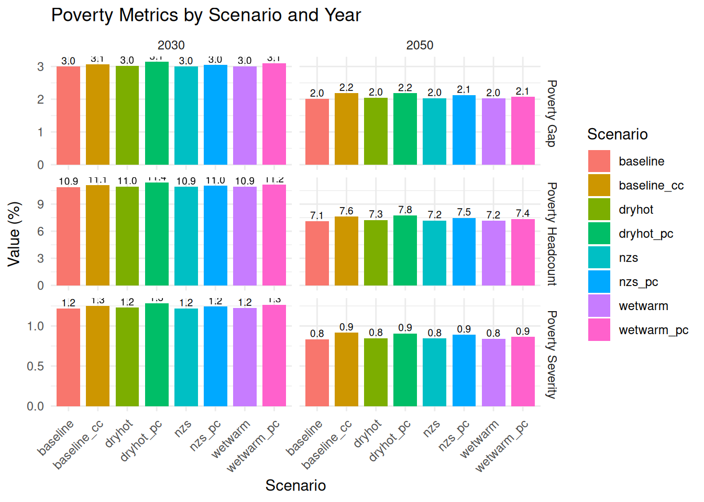
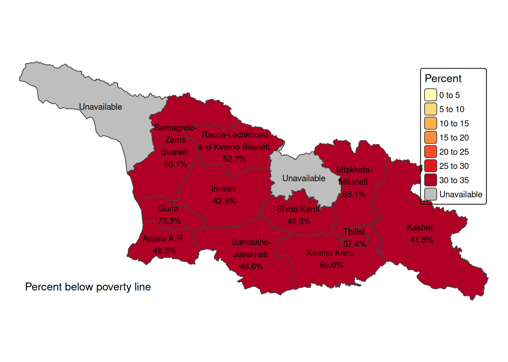

# Clean workspace
rm(list = ls())
# Georgia country ISO code
iso <- "GEO"
# Survey year
survey_year <- 2023
# # Exchange rate USD per GEL (Multiply by this to show results in USD)
# er <- 0.37
# Exchange rate 2017 (PPP) 2.6280 GEL per 1 US$
# Poverty lines
pline0 <- 212.8149 # Official USD3.60/Person/Day
# Using Georgia CPI, the 6.85 line would be (2023) GEL 355.10/person/month
# Using $3.60 in email, the 6.85 line would be (2023) GEL 404.9395
pline61 <- 355.10 # Intl. Poverty line of USD6.85/Person/Day
pline62 <- 404.9395 # Intl. Poverty line of USD6.85/Person/Day
# Poverty line used in the script below
pline <- pline0
# Years of interest for our macroeconomic scenario analysis
analysis_years <- c(2030, 2050)Georgia CCDR Microsimulation
1 Introduction
In this calculation file, we “age” the Georgian household survey according to demographic projections and different macroeconomic scenarios to explore the impact of climate-related risks and policy measures on the consumption expenditure distribution. It is part of a larger project with all background contributions to Georgia’s CCDR, available in this repository.
Using RStudio project makes it possible to not use setwd() to establish the root directory and refer to subdirectories in a relative manner, making interoperability easier within teams and not hard coding a particular computer’s file structure into the code. If you are using Positron or Visual Studio Code (and the Quarto extension) just “open folder” at the root of the repository. If you are using R directly, just add setwd(r'(C:\My\path\to\project\root)') at the beginning of your coding session.
1.1 Preamble
We start with a clean environment, making sure that any objects from a previous session are not present. We keep our country ISO code in a variable iso in case we need it later.
We call the appropriate libraries.
Rather than calling our libraries as we go, we will make sure we have everything we need from the beginning.
library(tidyverse) # includes dplyr, ggplot2, purr...
library(haven) # to read SPSS and Stata datasets
library(readxl) # to read from MS-Excel
library(openxlsx) # to write to MS-Excel.
library(gt) # pretty tables
library(car) # companion to applied regression
library(modelr) # regression models
#library(anesrake)
# Raking reweighting but we don't load it, because
# it changes the meaning of summarize from dplyr,
# so we use the form anesrake::anesrake() when using it.
library(janitor) # pretty subtotals
library(broom) # More regressions
library(zoo) # Calculate moving window average and max value
# library(Hmisc) # Estimates deciles, quintiles but use :: version too
# library(ineq) # Inequality measures
# library(acid) # Inequality measures we use acid::weighted.gini()
# Geopackages
library(sf) # to read and write shapefile maps
library(terra) # to perform geocalculations
library(tmap) # for static and interactive maps1.2 Datasets
We then load the datasets that we need for this study. These are based on Georgia’s Integrated Living Conditions Survey 2022 (GEOSTAT, 2023). We make a note that the household identification variable is UID.
## Household Unique ID, Weights, Location and other basic variables
hh_basics <- read_sav(
"data/ilcs_2023/sysschedule.sav") |>
mutate(
UID = as.integer(UID))
# Household size (includes no. of family members)
hh_size <- read_sav(
"data/ilcs_2023/familysize.sav")|>
mutate(
UID = as.integer(UID))
# Processed income at household level
hh_income <- read_sav(
"data/ilcs_2023/tblincomes.sav")|>
mutate(
UID = as.integer(UID))
# Consumption aggregate at household level
hh_expenditure <- read_sav(
"data/ilcs_2023/tblexpenditures.sav")|>
rename(# rename total expenditure variables
total_expenditure = MTlianixarjebi_,
total_expenditure_aeq06 = MTlianimoxmareba_EqAdScale,
total_expenditure_aeq08 = Mtlianimoxmareba_EqAdScale_08) |>
mutate(
UID = as.integer(UID))
# Characteristics of the dwelling
hh_chars <- read_sav(
"data/ilcs_2023/tblshinda01.sav")|>
mutate(
UID = as.integer(UID))
# Persons (pp)
pp <- read_sav(
"data/ilcs_2023/tblshinda02.sav") |>
mutate(
UID = as.integer(UID),
MemberNo = as.integer(MemberNo))
# Labor (pp)
pp_labor <- read_sav(
"data/ilcs_2023/tblshinda05_1.sav") |>
mutate(
UID = as.integer(UID),
MemberNo = as.integer(MemberNo),
Q5 = as.integer(Q5),
Q12 = as.integer(Q12))
# Poverty
poverty <- read_dta(
"data/ilcs_2023/POVERTY_stata.dta") |>
rename(official_pline = pline) |>
mutate(
UID = as.integer(UID),
poor_2023 = if_else(aecons < pline, 1, 0))
# Ind. Poverty
ind_poverty <- read_dta(
"data/ilcs_2023/IND_POVERTY_stata.dta") |>
rename(MemberNo = memberno) |>
mutate(
UID = as.integer(UID),
MemberNo = as.integer(MemberNo))
# Food diary
food_q <- read_sav(
"data/ilcs_2023/tblconsumption.sav") |>
rename(UID = UID)
food_price <- read_sav(
"data/ilcs_2023/tblavgprices.sav")
# Maps
adm1 <- sf::read_sf("data/gis/geo-adm1.shp") |>
dplyr::select(RegNo, region, ADM1_PCODE, ADM1_EN, ADM1_KA, geometry) |>
dplyr::arrange(ADM1_PCODE)
regions <- as.data.frame(adm1) |>
select(-geometry)We also need look-up tables.
sam_activities <- read_excel(
"data/sam/classifications.xlsx",
sheet = "SAM-REV2",
col_names = T,
col_types = c("text", "text", "text","text", "numeric")
)
sam_factors <- read_excel(
"data/sam/classifications.xlsx",
sheet = "SAM factors",
col_names = T,
col_types = "text",
)
coicop <- read_excel(
"data/sam/classifications.xlsx",
sheet = "COICOP",
col_names = T,
col_types = "text",
) |>
mutate(simple_code = as.integer(gsub("\\.", "", Coicop)))
coicop_filtered <- coicop |>
filter( nchar(as.character(simple_code)) >= 5)We also have Continuous Labor Survey data at the individual level, which will come in handy if we do not get access to the labor part of the ILCS. See data folder for documents describing the datasets.
# Labor Force Survey
lfs_2023 <- read_sav(
"data/lfs_2023/LFS_ECSTAT_ENG_2023.sav") |>
rename(UID = UID)
# Labor Force Survey Demographic Characteristics
lfs_2023_dem <- read_sav(
"data/lfs_2023/LFS_Demographic_ENG_2023.sav") |>
rename(UID = UID)We will work non-destructively, meaning we will not rewrite these data sets and we will only create intermediate data frame objects from them to perform transformations, selections and other data management tasks. For example, we will keep household assignment to poverty status and consumption deciles handy by creating a subset of our hh_expenditure data with only our household identifiers, deciles, and poverty if available.
# We will estimate deciles from consumption
deciles <- hh_expenditure |>
select(
# Keep household id and expenditure variables
UID,
total_expenditure,
total_expenditure_aeq06, # Adult equivalent * 0.6
total_expenditure_aeq08) # Adult equivalent * 0.8Our population data comes from UN’s projections.
population_projections <- read_dta("data/population/UN2022_population.dta") |>
filter(country == iso) # we filter for GeorgiaThe macro scenario dataset is an input provided by the Macroeconomic CGE simulation team, with yearly information on GDP, working age population, employment by economic activity (for an aggregation of three sectors: agriculture, manufacturing, and services), wages by economic activity, value added by economic activity, remittances, consumer price index, food price index and energy price index (for a bundle of gas, oil, coal, electricity) by decile (10 representative households in the macro model), and carbon tax revenue transfers to household deciles.
scenario_file <- "data/sam/MacroScenarioInformation_GEO.xlsx"
scenario_varlist <- read_xlsx("data/sam/GEO_Macro_varlist.xlsx") |>
select(-category)
# prices_2030 <-
# read.csv("data/ARM-Microsimulation/prices2030.csv")Economic Activities in the Survey are in Georgian. The following dataset is a lookup table with the English names.
# Equivalence table
sectors <- read_excel(
"data/sam/classifications.xlsx",
sheet = "SAM-REV2",
col_names = T,
col_types = "text",
)We also have an Excel file with changes to labor productivity due to climate variability, by sector. Also, we have livestock productivity changes.
labor_productivity <-
read.csv(
"data/climate_productivity/GEO_labour_REF_shock_admin1_bySector.csv")
agriculture_productivity <-
read.csv(
"data/climate_productivity/GEO_agriculture_revenue_impact_GCM-Historical.csv"
)
livestock_productivity <-
read.csv(
"data/climate_productivity/GEO_livestock_REF_shock_admin1_high_prop_holstein.csv"
)And finally, direct effects on consumption of Macro scenarios.
# HH Consumption Macro Effect
hh_consumption_effects <- read_excel(
"data/sam/MacroconsumptionEffect_HH_GEO.xlsx",
sheet = "HH_consumption_value",
col_names = F,
range = "A90:AD119"
)New names:
• `` -> `...1`
• `` -> `...2`
• `` -> `...3`
• `` -> `...4`
• `` -> `...5`
• `` -> `...6`
• `` -> `...7`
• `` -> `...8`
• `` -> `...9`
• `` -> `...10`
• `` -> `...11`
• `` -> `...12`
• `` -> `...13`
• `` -> `...14`
• `` -> `...15`
• `` -> `...16`
• `` -> `...17`
• `` -> `...18`
• `` -> `...19`
• `` -> `...20`
• `` -> `...21`
• `` -> `...22`
• `` -> `...23`
• `` -> `...24`
• `` -> `...25`
• `` -> `...26`
• `` -> `...27`
• `` -> `...28`
• `` -> `...29`
• `` -> `...30`names(hh_consumption_effects) <- c("scenario_id", "hh_type",c(2023:2050))
hh_consumption_effects <- hh_consumption_effects |>
mutate(
scenario_id = case_when(
scenario_id == "ccdr_all_dry_hot" ~ "dryhot",
scenario_id == "ccdr_all_wet_warm" ~ "wetwarm",
scenario_id == "ccdr_NZS_10_10" ~ "nzs",
.default = scenario_id
)) |>
select(-3)2 Data preparation, demographic characteristics, income outliers and missings
We start with various renames for standardization. Naming conventions in the guidance code use traditional abbreviations like nli for non-lablor income. We are opting for more descriptive variable names like non_labor_income, labor_income, etc. to have more easily readable code. We make an exception for total consumption (tc), because it’s a variable that we use in every scenario and it supersedes lenght limits when adding scenario identifiers.
# Uncomment the correct total expenditure variable below
ex <- hh_expenditure |>
rename(
tc =
total_expenditure
#total_expenditure_aeq06 # Adult equivalent * 0.6
#total_expenditure_aeq08 # Adult equivalent * 0.8
)We extract demographic characteristics for each individual.
2.1 Skill level
For skill level, we will use information on schooling from pp$Education (TblShinda02), which has the following levels:
- Illiterate
- Do not have primary education but can read and write
- Pre-primary education
- Primary education
- Lower secondary education
- Upper secondary education
- Vocational education without secondary general education
- Vocational education on the base of lower secondary education with secondary general education certificate
- Vocational education on the base of secondary general education (except higher professional education)
- Higher professional program
- Bachelor or equivalent
- Master or equivalent
- Doctor or equivalent
We need three skill levels for our SAM template, so we map these levels to:
Low skill (1 - 5): Illiterate through lower secondary. Medium skill (6 - 9): Upper secondary through vocational education. High skill (10 - 13): Higher professional program through Doctor.
pp_factor_descriptors <- pp |>
select(UID, MemberNo, Gender, Age, Education) |>
mutate(
MemberId =
paste0(sprintf("%06d", UID), sprintf("%02d", MemberNo))) |>
mutate(Gender = factor(
Gender,
levels = c(1, 2),
labels = c("Female", "Male")
)) |>
mutate(
SkillLevel = case_when(
Education >= 0 & Education <= 5 ~ 1,
Education > 5 & Education <= 9 ~ 2,
Education > 9 & Education <= 13 ~ 3,
TRUE ~ NA ) ) |>
mutate(
SkillLevel = factor(
SkillLevel,
levels = c( 1, 2, 3),
labels = c( "Low Skill", "Medium Skill", "High Skill"))
)Now that we have skill levels, we need to add information on urban/rural (from hh_basics) and quintile (from ind_poverty), and type of income earner (from pp_labor).
urb_rur <- hh_basics |>
select(UID,QuartNo, UrbanOrRural, RegNo, Weights) |>
mutate(
UrbanOrRural = factor(
UrbanOrRural,
levels = c(2,1),
labels = c("Rural", "Urban")
)
)
quintiles <- poverty |>
select(UID, quintilc, decilc, hhsize) |>
rename(
Quintile = quintilc,
Decile = decilc) |>
mutate(
Quintile = factor(
Quintile,
levels = c(1:5),
labels = c("Q1", "Q2", "Q3", "Q4", "Q5")
),
Decile = factor(
Decile,
levels = c(1:10),
labels = c(
"D01", "D02", "D03", "D04", "D05",
"D06", "D07", "D08", "D09", "D10")
))
is_employed <- ind_poverty |>
mutate(
MemberId =
paste0(sprintf("%06d", UID), sprintf("%02d", MemberNo))) |>
mutate(
employed = case_when(
empl == 1 ~ T,
empl == 0 ~ F,
.default = NA
)
) |>
select(
MemberId, employed
)
pp_lmarket0 <- pp_labor |>
mutate(
MemberId =
paste0(sprintf("%06d", UID), sprintf("%02d", MemberNo))) |>
select(-c(UID,MemberNo))
pp_lmarket1 <- pp_factor_descriptors |>
left_join(urb_rur, join_by(UID)) |>
left_join(quintiles, join_by(UID)) |>
left_join(pp_lmarket0, join_by(MemberId)) |>
relocate(c(UID, MemberNo, MemberId, QuartNo), .before = 1)2.2 Labor status and Economic Activities
We work with labor status from Shinda05_1. Since, upon import NACE 2 codes are converted to numbers, we need to convert them back to text, so that we can keep zeros to the left for proper order. We then extract the first two digits and find the correspondence to Rev. 2 from the SAM using the look-up table sam_activities. For proper order, we convert the SAM activities columns for job 1 and job 2 to factor, using the order from the dataset sam_factors.
pp_microsim01 <- pp_lmarket1 |>
mutate(
MemberId =
paste0(sprintf("%06d", UID), sprintf("%02d", MemberNo))) |>
mutate(
# Job 1 NACE Rev 2 code.
Q5 = if_else(!is.na(Q5),paste0(sprintf("%04d", Q5)), NA),
# Job 2 NACE Rev 2 code.
Q12 = if_else(!is.na(Q12),paste0(sprintf("%04d", Q12)), NA)) |>
mutate(
job1 = if_else(!is.na(Q5),substr(Q5, 1, 2), NA),
job2 = if_else(!is.na(Q12),substr(Q12, 1, 2), NA)
) |>
# Is employed?
left_join(
is_employed,
join_by(MemberId)
) |>
# We match to Rev 2 and SAM classifications (for job 1 and job 2)
left_join(
sam_activities[,c(1,5)],
join_by(job1 == rev2_2d)) |>
left_join(
sam_activities[,c(1,5)],
join_by(job2 == rev2_2d),
suffix =
c("_job1", "_job2")) |>
# And convert to factors for proper order
mutate(
SAM3_job1 = factor(
SAM3_job1,
levels = c(1:3),
labels = c("Agriculture", "Manufactures", "Services")
),
SAM3_job2 = factor(
SAM3_job2,
levels = c(1:3),
labels = c("Agriculture", "Manufactures", "Services")
)
) 2.3 Types of income
Before making our multi-dimensional tables, we need to identify different types of income. f-lab (wages) and f-surp (capital income). The instruction is that f-surp needs to be split into wages to entrepreneurs/self employed and capital income.
pp_microsim02 <- pp_microsim01 |>
mutate(
# We add accross three months for each source (and coalesce the NAs to 0)
labor_income_job1 =
rowSums(
across(starts_with("Q8_faqti_"), \(x) coalesce(x, 0))),
labor_income_job2 =
rowSums(
across(starts_with("Q14_faqti_"), \(x) coalesce(x, 0))),
surplus_income =
rowSums(
across(starts_with("Q10_faqti_"), \(x) coalesce(x, 0)))
) |>
# We also add factor labels to Employment Status
mutate(
lstatus1 = factor(
Q7,
levels = c(1:6),
labels = c(
"Employee", "Employer", "Own Account (Non-Ag.)",
"Own Account (Ag.)", "Unpaid Worker", "Other"))
) |>
mutate(
lstatus2 = factor(
Q13,
levels = c(1:6),
labels = c(
"Employee", "Employer", "Own Account (Non-Ag.)",
"Own Account (Ag.)", "Unpaid Worker", "Other"))
)2.4 Missing and outliers
In this section we will assign a labor income for job1 holders with !lstatus1 %in% c(2,5) & labor_income_job1 == 0 based on predicted income from everyone else who doesn’t meet the condition. We will estimate annual_labor_total after predictions.
Looking at the data we see that only those that report being an employee or “other” report having labor income 1 or 2; Employer and Own Account non-ag report having surplus; and own account ag and (of course) unpaid worker
We first identify who needs predictions for job1, job2, and surplus. We default to NA because we want to preserve the logic of those who don’t have an income, because they aren’t supposed to have one. However, this introduces an uncertainty element when predicting further down the line, because subsetting does not allow NA’s. Even if we want to match just TRUEs. So it’s a double-edged sword. The fix was using which() to find row numbers of those with TRUE.
pp_microsim03 <- pp_microsim02 |>
mutate(
fix_job1 = case_when(
(!is.na(Q7) & Q7 %in% c(2,3,4,5)) ~ F,
(!is.na(Q7) & Q7 %in% c(1,6) & labor_income_job1 > 0) ~ F,
(!is.na(Q7) & Q7 %in% c(1,6) & labor_income_job1 == 0) ~ T,
.default = NA
),
fix_job2 = case_when(
(!is.na(Q13) & Q13 %in% c(2,3,4,5)) ~ F,
(!is.na(Q13) & Q13 %in% c(1,6) & labor_income_job2 > 0) ~ F,
(!is.na(Q13) & Q13 %in% c(1,6) & labor_income_job2 == 0) ~ T,
.default = NA
),
fix_surplus = case_when(
(!is.na(Q7) & Q7 %in% c(1,4,5,6)) ~ F,
(!is.na(Q7) & Q7 %in% c(2,3) & surplus_income > 0) ~ F,
(!is.na(Q7) & Q7 %in% c(2,3) & surplus_income == 0) ~ T,
.default = NA
))Outliers and need to predict.
pp_microsim04 <- pp_microsim03 |>
mutate(
sd_job1 = sd(labor_income_job1, na.rm = T),
sd_job2 = sd(labor_income_job2, na.rm = T),
sd_surplus = sd(surplus_income , na.rm = T),
d_job1 = labor_income_job1 / sd_job1,
d_job2 = labor_income_job2 / sd_job2,
d_job1 = surplus_income / sd_surplus,
)Assign sector to missings.
pp_microsim05 <- pp_microsim04 |>
group_by(UID) |>
mutate(
# Create a temporary variable 'other_sector' as a factor
other_sector_job1 = case_when(
!is.na(Q7) & !is.na(SAM3_job1) & SAM3_job1 %in% levels(SAM3_job1) ~ SAM3_job1,
TRUE ~ NA_character_ # Keep as character NA for now
)
) |>
fill(other_sector_job1, .direction = "downup") |>
mutate(
other_sector_job1 = if_else(is.na(Q7), NA_character_, other_sector_job1)
) |>
mutate(
# Impute missing 'sector' values based on 'other_sector'
SAM3_job1 = as.factor(if_else(
!is.na(Q7),
as.character(coalesce(as.character(SAM3_job1), other_sector_job1)),
as.character(SAM3_job1)
)),
SAM3_job2 = as.factor(if_else(
!is.na(Q13),
as.character(coalesce(as.character(SAM3_job2), other_sector_job1)),
as.character(SAM3_job2)
)),
# Re-establish levels and labels
SAM3_job1 = factor(SAM3_job1, levels = c("Agriculture", "Manufactures", "Services")),
SAM3_job2 = factor(SAM3_job2, levels = c("Agriculture", "Manufactures", "Services"))
) |>
ungroup()2.5 The income simulation regression
Since labor income was a key variable, which we needed to match with the future wage bill by economic activity, we first checked for missing values among employed individuals. We found that almost a third of respondents (28.6%) did not report income for either their primary or secondary job. To overcome this limitation, we used the available information from the remaining respondents to estimate an extended Mincer equation, as shown in Equation 1, and implemented in Listing 1. For the respondents with available information, we also identified outliers as those outside of five standard deviations from the mean labor income.
\[ \begin{equation} \begin{split} \ln(lab_i) = \\ \beta_0 + \beta_1 \text{age}_i + \\ \beta_2 \text{gender}_i + \beta_3 \text{education}_i + \\ \beta_4 \text{age}^2_i + \beta_5 \text{marz}_i + \\ \beta_6 \text{sector}_i + \epsilon_i \end{split} \end{equation} \tag{1}\]
Where:
- \(\ln(lab_i)\) is the natural logarithm of labor income for individual \(i\).
- \(\beta_0\) is the intercept term.
- \(\beta_1, \beta_2, \beta_3, \beta_4, \beta_5, \beta_6\) are the coefficients for the respective independent variables.
- \(\text{age}_i\) is the age of individual \(i\).
- \(\text{gender}_i\) is a binary variable indicating the gender of individual \(i\) (1 for female, 2 for male).
- \(\text{education}_i\) represents the level of education for individual \(i\) (ordered: 1) None to General, 2) Secondary to Vocational, 3) Higher education).
- \(\text{age}^2_i\) is the square of the age of individual \(i\), included to capture non-linear effects of age on labor income.
- \(\text{marz}_i\) represents the region where individual \(i\) resides.
- \(\text{sector}_i\) represents the sector of employment for individual \(i\) (i.e., agriculture, manufacturing or services).
- \(\epsilon_i\) is the error term for individual \(i\).
We first prepare our variables for the regression.
pp_microsim06 <- pp_microsim05 |>
rename(
education = Education,
age = Age,
gender = Gender,
region = RegNo) |>
mutate(
education2 = education^2,
age2 = age^2,
male = case_when(
gender == 1 ~ 1,
gender == 2 ~ 0
),
ln_lab1 = if_else(
!is.na(labor_income_job1) & labor_income_job1 != 0,
log(labor_income_job1),
NA),
ln_lab2 = if_else(
!is.na(labor_income_job2) & labor_income_job2 != 0,
log(labor_income_job2),
NA),
ln_surplus = if_else(
!is.na(surplus_income) & surplus_income != 0,
log(surplus_income),
NA),
sim_job1 = NA_real_,
sim_job2 = NA_real_,
sim_surplus = NA_real_
)|>
# Labor Market Status
mutate(
lmarket = case_when(
!is.na(Q7) ~ as.numeric(SAM3_job1),
is.na(Q7) & age >= 15 ~ 4, # Unemployed
is.na(Q7) & age < 15 ~ 5, # OLF
.default = NA_integer_
)
)Filter the data for regression conditions.
regression_data_job1 <- pp_microsim06 |>
filter(Q7 %in% c(1,6) & fix_job1 == F)
regression_data_job2 <- pp_microsim06 |>
filter(Q13 %in% c(1,6) & fix_job2 == F)
regression_data_surplus <- pp_microsim06 |>
filter(Q7 %in% c(2,3) & fix_surplus == F)Regression model.
model_job1 <- lm(
ln_lab1 ~
age + gender + education +
age2 + region + SAM3_job1,
data = regression_data_job1)
model_job2 <- lm(
ln_lab2 ~
age + gender + education +
age2 + region + SAM3_job2,
data = regression_data_job2)
model_surplus <- lm(
ln_surplus ~
age + gender + education +
age2 + region + SAM3_job1,
data = regression_data_surplus)Applying predictions to those who need it.
Note: The ‘predict’ function in R does not directly support conditions within the function call, so we handle this by filtering or subsetting the data as needed.
Note: ‘type = “response”’ might be needed depending on model type.
# rows to predict (this removes uncertainty NAs for predictions)
target_rows_job1 <- which(pp_microsim06$fix_job1 == TRUE)
target_rows_job2 <- which(pp_microsim06$fix_job2 == TRUE)
target_rows_surplus <- which(pp_microsim06$fix_surplus == TRUE)
# predictions
pp_microsim06$sim_job1[target_rows_job1] <- exp(
predict(
model_job1,
pp_microsim06[target_rows_job1, ],
type = "response")
)
pp_microsim06$sim_job2[target_rows_job2] <- exp(
predict(
model_job1,
pp_microsim06[target_rows_job2, ],
type = "response")
)
pp_microsim06$sim_surplus[target_rows_surplus] <- exp(
predict(
model_job1,
pp_microsim06[target_rows_surplus, ],
type = "response")
)At this point, if there were negative predictions, we would have to make them zero. There are none such cases in this exercise.
And now, we replace simulated income for those who lack one.
pp_microsim07 <- pp_microsim06 |>
mutate(
labor_income_job1 = if_else(
fix_job1 == T,
sim_job1,
labor_income_job1
),
labor_income_job2 = if_else(
fix_job2 == T,
sim_job2,
labor_income_job2
),
surplus_income = if_else(
fix_surplus == T,
sim_surplus,
surplus_income
)
)Finally, we estimate total labor income.
pp_microsim08 <- pp_microsim07 |>
mutate(
# Annual income
annual_labor_income_job1 = labor_income_job1 * 4,
annual_labor_income_job2 = labor_income_job2 * 4,
annual_surplus_income = surplus_income * 4,
# Monthly income
monthly_labor_income_job1 = labor_income_job1 / 3,
monthly_labor_income_job2 = labor_income_job2 / 3,
monthly_surplus_income = surplus_income / 3
) |>
mutate(
# Annual labor income in GEL
annual_labor_total = if_else(
Q7 %in% c(1,2,3,6) | Q13 %in% c(1,2,3,6),
(coalesce(
annual_labor_income_job1, 0) +
coalesce(
annual_labor_income_job2, 0) +
coalesce(
annual_surplus_income, 0)
),
NA_real_
),
# Monthly labor income in GEL
monthly_labor_total = if_else(
Q7 %in% c(1,2,3,6) | Q13 %in% c(1,2,3,6),
(coalesce(
monthly_labor_income_job1, 0) +
coalesce(
monthly_labor_income_job2, 0) +
coalesce(
monthly_surplus_income, 0)
),
NA_real_
))3 UN Population Projections
Now we are ready to move to our demographic projections and macroeconomic model information.
First, filtering based on country (our iso variable).
population_projections <- population_projections |>
filter(country == iso)Collapsing data by summing up variables starting with “yf” and “ym” and reshaping data to long format.
population_projections <- population_projections |>
group_by(Variant, country, cohort) |>
summarize(across(starts_with(c("yf", "ym")), sum)) |>
ungroup()
population_projections <- pivot_longer(population_projections,
cols = starts_with(c("yf", "ym")),
names_to = c(".value", "year"),
names_pattern = "(yf|ym)(.*)")Creating new variable total_population as the sum of yf and ym. Dropping country variables.
population_projections <- population_projections |>
mutate(total_population = yf + ym) |>
select( -country) |>
mutate(year = as.numeric(year))Summarizing the year to find the range.
minyear <- survey_year # Make sure `survey_year` is correctly defined
maxyear <- max(as.numeric(population_projections$year))We have that the “Min Year” is minyear and the “Max Year” is maxyear. Now we create a population growth rate by demographic variant dataset. We initialize an empty list to store our data by variant and we loop over variants to create this list.
# With minyear and maxyear defined above
# Initialize a list to store growth data
pop_growth <- list()
# Loop over variants
variants <- unique(population_projections$Variant)
for (variant in variants) {
for (t in minyear:maxyear) {
# Calculate population for year t
pop_t <- population_projections |>
filter(year == t, Variant == variant) |>
summarize(sum_pop = sum(total_population)) |>
pull(sum_pop)
# Calculate population for base year
pop_base <- population_projections |>
filter(year == minyear, Variant == variant) |>
summarize(sum_pop = sum(total_population)) |>
pull(sum_pop)
# Calculate growth rate and store in list with dynamic naming
growth_rate <- pop_t / pop_base
pop_growth[[paste0(t, "_", variant)]] <- list(
growth_rate = growth_rate, pop_t = pop_t
)
}
}With the list ready, we convert back to dataframe by stitching the list elements one on top of the other.
# Convert list to dataframe
pop_growth <- do.call(rbind, lapply(names(pop_growth), function(x) {
# Extract year and variant from the name
parts <- unlist(strsplit(x, "_"))
year <- as.integer(parts[1])
variant <- parts[2]
# Create a tibble for each entry
tibble(year = year,
variant = variant,
total_population = pop_growth[[x]]$pop_t,
pop_growth_rate = pop_growth[[x]]$growth_rate)
}))
# Arrange the dataframe for better readability
pop_growth <- arrange(pop_growth, variant, year)
# Display the first few rows of the dataframe
pop_growth[c(1:09),]# A tibble: 9 × 4
year variant total_population pop_growth_rate
<int> <chr> <dbl> <dbl>
1 2023 Constant-fertility 3728. 1
2 2024 Constant-fertility 3718. 0.997
3 2025 Constant-fertility 3710. 0.995
4 2026 Constant-fertility 3702. 0.993
5 2027 Constant-fertility 3693. 0.990
6 2028 Constant-fertility 3683. 0.988
7 2029 Constant-fertility 3673. 0.985
8 2030 Constant-fertility 3663. 0.983
9 2031 Constant-fertility 3653. 0.9804 Macro Scenarios
Here we use the Excel tab names to create the names of the scenarios going forward, with a previous cleaning in which we convert names to lower case, replace spaces and special characters with underscores, we remove the word scenario from the name, and remove leading or trailing spaces or underscores.
# Macro Scenario File imported in "Datasets" section (scenario_file)
sheets <- excel_sheets(scenario_file)
scenario_sheets <- sheets[c(1:4)]
# Define the names of the scenarios and the variants
# modify list with the tab numbers in the Excel file
scenarios <- scenario_sheets |>
# Convert all text to lowercase
str_to_lower() |>
# Remove all spaces and hyphens
# (we want lowercase one word scenario names for variable names)
str_replace_all("[ -]", "") |>
# Remove the word 'scenario' or 'scenarios'
str_remove_all("scenario?s?") |>
# Remove leading and trailing underscores
str_replace_all("^_+|_+$", "") Our scenarios are: baseline, dryhot, wetwarm, and nzs. We now import data from Excel sheets corresponding to each scenario and combine them into one data frame.
# Create an empty list to store data frames for each scenario
scen_data_list <- list()
# Import data for each scenario and store it in the list.
# Note the trick where we use the index `i` from `scenarios`
# but access the scenario_sheets name to fetch the Excel
# tab.
for (i in seq_along(scenarios)) {
sheet_data <- read_excel(scenario_file,
sheet = scenario_sheets[i],
range = "A3:AX30",
col_names = FALSE)
sheet_data$scenario_id <- scenarios[i]
colnames(sheet_data) <- scenario_varlist$var_short_name
scen_data_list[[i]] <- sheet_data
}
# Combine all data frames into one
macro_data <- bind_rows(scen_data_list)
# Remove unnecessary list
rm(scen_data_list)We then rename columns, create a ‘scenid’ to identify scenarios, and merge with population projections. Calculate real wages
# Rename population_m from the data set because we will use
# UN pop projections from the other data set.
macro_data <- macro_data |>
rename(population_m_macrodata = population_m)We prepare our population data to combine it with the macro data.
pop_data <- population_projections |>
group_by(Variant, year) |>
summarize(female = sum(yf),
male = sum(ym),
total_population = sum(total_population) ) |>
ungroup()`summarise()` has grouped output by 'Variant'. You can override using the
`.groups` argument.# Filter population data to macro model years
pop_data <- pop_data |>
filter(year <= max(macro_data$year),
Variant == variants[7])
# Merge the combined data with population projections
macro_data <- macro_data |>
left_join(pop_data, by = c("year"))There are some calculated variables that we need to estimate.
# Calculate real wages
macro_data <- macro_data |>
# Compute real wages
mutate(
rwage_agr_b_lcu = (wage_agri_lcu1000s * emp_agri_million) / cpi,
rwage_man_b_lcu = (wage_manu_lcu1000s * emp_manu_million) / cpi,
rwage_ser_b_lcu = (wage_serv_lcu1000s * emp_serv_million) / cpi
) |>
# Define labor market groups using the macro-based population base
mutate(
lmarket_1 = emp_agri_million,
lmarket_2 = emp_manu_million,
lmarket_3 = emp_serv_million,
lmarket_4 = working_age_pop_m - (lmarket_1 + lmarket_2 + lmarket_3),
lmarket_5 = population_m_macrodata - working_age_pop_m
)We calculate columns for the totals by labor market group so we can derive our shares.
# And we label these variables
attr(macro_data$total_population,
"label") <- "Total population (million)"
attr(macro_data$lmarket_1,
"label") <- "Employed in agriculture (million)"
attr(macro_data$lmarket_2,
"label") <- "Employed in manufacturing (million)"
attr(macro_data$lmarket_3,
"label") <- "Employed in services (million)"
attr(macro_data$lmarket_4,
"label") <- "Unemployed and inactive (million)"
attr(macro_data$lmarket_5,
"label") <- "Outside the labor force (million)"With our demographic data added to our macroeconomic data, we need to estimate relative growth of some of the variables. For this we create a function to estimate growth per column to a named list of column.
# Function to add growth rate columns directly in the dataframe
calculate_growth <- function(data, value_column) {
growth_col_name <- paste0(value_column, "_growth") # dynamic name for growth column
data |>
arrange(year) |>
group_by(Variant, scenario_id) |>
mutate(
base_value = first(!!sym(value_column)),
!!sym(growth_col_name) := !!sym(value_column) / base_value
) |>
select(-base_value) |> # optionally remove base_value column if not needed
ungroup()
}
# Columns to calculate growth for
value_columns <- c(
"rwage_agr_b_lcu", # Real wage agriculture
"rwage_man_b_lcu", # Real wage manufacturing
"rwage_ser_b_lcu", # Real wage services
"lmarket_1",
"lmarket_2",
"lmarket_3",
"lmarket_4",
"lmarket_5"
)We create the list and pass it to the function.
# Using purrr to apply the function column-wise, without a for loop.
macro_data <- reduce(value_columns, calculate_growth, .init = macro_data)
# We relocate some variables for clarity.
macro_data <- macro_data |>
relocate(scenario_id, Variant, .before = year) |>
arrange(scenario_id, Variant, year)Now that macro_data has growth rate columns for each of the variables. We can check, for example, the employment and wage growth rates for our three scenarios in the analysis years.
macro_data[macro_data$year %in% c(2030, 2050),c(
c("scenario_id",
"lmarket_1_growth",
"lmarket_2_growth",
"lmarket_3_growth",
"lmarket_4_growth",
"lmarket_5_growth")
)] |>
gt(rowname_col = "scenario_id") |>
cols_label(
lmarket_1_growth = md("Agriculture"),
lmarket_2_growth = md("Manufacturing"),
lmarket_3_growth = md("Services"),
lmarket_4_growth = md("Unemployed"),
lmarket_5_growth = md("OLF")
) |>
fmt_number(columns = everything(),
decimals = 2)| Agriculture | Manufacturing | Services | Unemployed | OLF | |
|---|---|---|---|---|---|
| baseline | 0.93 | 0.98 | 1.00 | 0.96 | 1.00 |
| baseline | 0.63 | 0.90 | 0.96 | 0.84 | 0.98 |
| dryhot | 0.94 | 0.98 | 0.99 | 0.96 | 1.00 |
| dryhot | 0.63 | 0.90 | 0.96 | 0.84 | 0.98 |
| nzs | 0.92 | 0.99 | 1.00 | 0.96 | 1.00 |
| nzs | 0.59 | 0.92 | 0.96 | 0.84 | 0.98 |
| wetwarm | 0.94 | 0.98 | 0.99 | 0.96 | 1.00 |
| wetwarm | 0.63 | 0.90 | 0.96 | 0.84 | 0.98 |
macro_data[macro_data$year %in% c(2030, 2050),c(
c("scenario_id",
"rwage_agr_b_lcu_growth",
"rwage_man_b_lcu_growth",
"rwage_ser_b_lcu_growth")
)] |>
gt(rowname_col = "scenario_id") |>
cols_label(
rwage_agr_b_lcu_growth = md("Agriculture"),
rwage_man_b_lcu_growth = md("Manufacturing"),
rwage_ser_b_lcu_growth = md("Services")
) |>
fmt_number(columns = everything(),
decimals = 2)| Agriculture | Manufacturing | Services | |
|---|---|---|---|
| baseline | 1.20 | 1.35 | 1.34 |
| baseline | 1.43 | 2.68 | 2.63 |
| dryhot | 1.21 | 1.34 | 1.32 |
| dryhot | 1.38 | 2.59 | 2.50 |
| nzs | 1.18 | 1.36 | 1.34 |
| nzs | 1.27 | 2.80 | 2.54 |
| wetwarm | 1.21 | 1.35 | 1.33 |
| wetwarm | 1.43 | 2.64 | 2.58 |
5 Reweighting of the dataset
5.1 Aggregation of population data
This is based on a custom command to reweight the survey according to macroeconomic data for every possible combination of variant, year, and country. In the macro data we know they only used the “medium” variant and we only need to reweight for two specific years for Georgia (GEO), so we will conduct the reweighting directly with these parameters.
We join several cohorts from 0 to 29 years old and from 60 onwards, because the reweighting procedure works best if each category is at least 5% of the population. The solution here works best for Georgia.
population_projections <- population_projections |>
# filter(Variant == "Medium") |>
# Recoding cohorts into ordered factors
mutate(
cohort_short = factor(
case_when(
cohort %in%
c("P0004", "P0509","P1014",
"P1519","P2024", "P2529") ~ "P0029",
cohort %in%
c("P3034", "P3539") ~ "P3039",
cohort %in%
c("P4044", "P4549") ~ "P4049",
cohort %in%
c("P5054", "P5559") ~ "P5059",
cohort %in%
c("P6064", "P6569","P7074", "P7579",
"P8084", "P8589", "P9094", "P9599",
"P100up") ~ "P60up"),
levels =
c("P0029", "P3039", "P4049",
"P5059", "P60up"))) |>
# Get also factor 'cohort' to numeric codes
mutate(cohort_code = as.integer(cohort_short))Let’s now create cohorts in our pp_microsim data to match our population projection data.
# Convert 'age' into 'cohort' factor with levels ordered as specified
pp_microsim10 <- pp_microsim09 |>
mutate(cohort = factor(case_when(
age >= 0 & age <= 29 ~ "P0029",
age >= 30 & age <= 39 ~ "P3039",
age >= 40 & age <= 49 ~ "P4049",
age >= 50 & age <= 59 ~ "P5059",
age >= 60 ~ "P60up"
), levels = c("P0029", "P3039", "P4049", "P5059", "P60up")))
# Convert the 'cohort' and 'gender' factor to numeric codes
pp_microsim11 <- pp_microsim10 |>
mutate(cohort_code = as.integer(cohort)) |>
mutate(gender_code = as.integer(gender)) |>
mutate(weight = Weights / 4)
# rm(list = ls(pattern = "^pp_microsim[0-9]+$"))We also need demographic targets for 2030 and 2050
# Ensure pop_targets_2030 is correctly prepared
# We use the "Medium" variant = variants[7]
pop_targets_2030 <- population_projections |>
filter(year == 2030, Variant == variants[7]) |>
group_by(cohort_code, cohort_short) |>
summarize(female = sum(yf),
male = sum(ym),
total = sum(total_population),
) |>
ungroup()
pop_targets_2050 <- population_projections |>
filter(year == 2050, Variant == variants[7]) |>
group_by(cohort_code, cohort_short) |>
summarize(female = sum(yf),
male = sum(ym),
total = sum(total_population),
) |>
ungroup()
pop_total_2030 <- sum(pop_targets_2030$total)
pop_total_2050 <- sum(pop_targets_2050$total)
pop_targets_2030 <- pop_targets_2030 |>
mutate(pct_total = total / pop_total_2030)
pop_targets_2050 <- pop_targets_2050 |>
mutate(pct_total = total / pop_total_2050)
#writeClipboard(pop_targets_2030)
# write.table(pop_targets_2030, "clipboard", sep="\t", row.names=FALSE)We add economic targets from lmarket, by combining totals from the survey and growth rates by share from the macro file so that shares do not have wild changes (since the shares of lmarket are so different between the macro file and the actual survey). We do this so that labor income doesn’t change in a completely radical way.
# Survey baseline (e.g. 2023) weighted totals by labor market group
survey_lmarket_base <- pp_microsim11 |>
group_by(lmarket) |>
summarize(survey_total = sum(weight, na.rm = TRUE)) |>
arrange(lmarket) # Make sure it's in order 1 to 5
survey_totals <- survey_lmarket_base$survey_total # length 5
# Get the macro growth rates and apply them:
lmarket_targets <- macro_data |>
filter(year %in% analysis_years, scenario_id %in% scenarios, Variant == variants[7]) |>
select(scenario_id, year, starts_with("lmarket_")) |>
# Select only *_growth columns
select(scenario_id, year, matches("lmarket_\\d+_growth")) |>
arrange(scenario_id, year) |>
rowwise() |>
mutate(
# Apply growth rate to survey baseline
l1 = survey_totals[1] * lmarket_1_growth,
l2 = survey_totals[2] * lmarket_2_growth,
l3 = survey_totals[3] * lmarket_3_growth,
l4 = survey_totals[4] * lmarket_4_growth,
l5 = survey_totals[5] * lmarket_5_growth
) |>
mutate(
total = l1 + l2 + l3 + l4 + l5,
target_lmarket_1 = l1 / total,
target_lmarket_2 = l2 / total,
target_lmarket_3 = l3 / total,
target_lmarket_4 = l4 / total,
target_lmarket_5 = l5 / total
) |>
select(scenario_id, year, starts_with("target_lmarket")) |>
ungroup()5.2 Reweigting
We use anesrake to calculate targets from known future proportions of sex, age, economic sector. We first create a target list.
# Create a list to store targets for each scenario and year
all_targets <- list()
for (sc in scenarios) {
for (yr in analysis_years) {
# 1. Get population targets
pop_targets <- population_projections |>
filter(year == yr, Variant == "Medium") |>
group_by(cohort_code, cohort_short) |>
summarize(female = sum(yf),
male = sum(ym),
total = sum(total_population),
.groups = "drop") |>
mutate(pct_total = total / sum(total))
gender_code <- c(
sum(pop_targets$female) / sum(pop_targets$total),
sum(pop_targets$male) / sum(pop_targets$total)
)
cohort_code <- pop_targets$pct_total
# 2. Get labor market targets from the newly computed table
lmarket_code <- lmarket_targets |>
filter(scenario_id == sc, year == yr) |>
select(starts_with("target_lmarket")) |>
unlist(use.names = FALSE)
# 3. Store targets in named list
targets <- list(
gender_code = gender_code,
cohort_code = cohort_code,
lmarket = lmarket_code
)
names(targets) <- c("gender_code", "cohort_code", "lmarket")
# 4. Save using naming convention "name_year_scenario"
key <- paste0("targets_", yr, "_", sc)
all_targets[[key]] <- targets
}
}And now we perform the reweighting, using the original weights. Initially we had used the default option type = “pctlim” combined with pctlim=0.05, because the method recommends that if reweighting changes for one variable according to its target are not of at least 5%, then it’s not worth burdening the procedure with it. It then ignored sex as a reweighting variable, leaving a small percentage difference between the target and the final population. However, we then tried removing this limitation and the procedure reached convergence in 40 and 49 iterations very efficiently for 2030 and 2050, respectively.
This has now been put into a for loop to facilitate multiple scenarios. See the original Armenia code for a simpler “by hand” version.
rakedata_base <- as.data.frame(pp_microsim11)
original_weight_sum <- sum(rakedata_base$weight)
for (key in names(all_targets)) {
parts <- strsplit(key, "_")[[1]]
yr <- parts[2]
sc <- parts[3]
targets <- all_targets[[key]]
cat("🔁 Raking:", yr, sc, "\n")
outsave <- anesrake::anesrake(
targets, # <- positional
rakedata_base, # <- positional
caseid = rakedata_base$MemberId,
choosemethod = "total",
type = "nolim",
nlim = 3,
iterate = TRUE,
force1 = TRUE,
verbose = TRUE
)
weight_name <- paste0("weight_", yr, "_", sc)
new_weight <- unlist(outsave[[1]])
rakedata_base[[weight_name]] <- new_weight
scaling_factor <- pop_data$total_population[pop_data$year == as.integer(yr)] /
pop_data$total_population[pop_data$year == 2023]
target_sum <- original_weight_sum * scaling_factor
new_sum <- sum(new_weight)
rakedata_base[[weight_name]] <- rakedata_base[[weight_name]] * (target_sum / new_sum)
cat("✅ Finished:", weight_name,
"| Rescaled sum =", round(sum(rakedata_base[[weight_name]])), "\n\n")
}🔁 Raking: 2030 baseline [1] "Raking...Iteration 1"
[1] "Current iteration changed total weights by 10198.6236928413"
[1] "Raking...Iteration 2"
[1] "Current iteration changed total weights by 1127.83410643334"
[1] "Raking...Iteration 3"
[1] "Current iteration changed total weights by 105.331275545111"
[1] "Raking...Iteration 4"
[1] "Current iteration changed total weights by 29.3179762115329"
[1] "Raking...Iteration 5"
[1] "Current iteration changed total weights by 12.5350597845507"
[1] "Raking...Iteration 6"
[1] "Current iteration changed total weights by 5.33204611403515"
[1] "Raking...Iteration 7"
[1] "Current iteration changed total weights by 2.2627503653339"
[1] "Raking...Iteration 8"
[1] "Current iteration changed total weights by 0.959752781272666"
[1] "Raking...Iteration 9"
[1] "Current iteration changed total weights by 0.407028549556432"
[1] "Raking...Iteration 10"
[1] "Current iteration changed total weights by 0.172612144088801"
[1] "Raking...Iteration 11"
[1] "Current iteration changed total weights by 0.0731998955294041"
[1] "Raking...Iteration 12"
[1] "Current iteration changed total weights by 0.0310417747231533"
[1] "Raking...Iteration 13"
[1] "Current iteration changed total weights by 0.0131638022302782"
[1] "Raking...Iteration 14"
[1] "Current iteration changed total weights by 0.0055823314047645"
[1] "Raking...Iteration 15"
[1] "Current iteration changed total weights by 0.00236728013479159"
[1] "Raking...Iteration 16"
[1] "Current iteration changed total weights by 0.0010038841452325"
[1] "Raking...Iteration 17"
[1] "Current iteration changed total weights by 0.000425713568770913"
[1] "Raking...Iteration 18"
[1] "Current iteration changed total weights by 0.000180530832390724"
[1] "Raking...Iteration 19"
[1] "Current iteration changed total weights by 7.65570571219509e-05"
[1] "Raking...Iteration 20"
[1] "Current iteration changed total weights by 3.24652799320035e-05"
[1] "Raking...Iteration 21"
[1] "Current iteration changed total weights by 1.37674364605322e-05"
[1] "Raking...Iteration 22"
[1] "Current iteration changed total weights by 5.8383036555254e-06"
[1] "Raking...Iteration 23"
[1] "Current iteration changed total weights by 2.47582724105522e-06"
[1] "Raking...Iteration 24"
[1] "Current iteration changed total weights by 1.04992399557746e-06"
[1] "Raking...Iteration 25"
[1] "Current iteration changed total weights by 4.45227162360062e-07"
[1] "Raking...Iteration 26"
[1] "Current iteration changed total weights by 1.88805963918792e-07"
[1] "Raking...Iteration 27"
[1] "Current iteration changed total weights by 8.00703366388156e-08"
[1] "Raking...Iteration 28"
[1] "Current iteration changed total weights by 3.39568085316877e-08"
[1] "Raking...Iteration 29"
[1] "Current iteration changed total weights by 1.43948009623251e-08"
[1] "Raking...Iteration 30"
[1] "Current iteration changed total weights by 6.10741224260636e-09"
[1] "Raking...Iteration 31"
[1] "Current iteration changed total weights by 2.59449417505664e-09"
[1] "Raking...Iteration 32"
[1] "Current iteration changed total weights by 1.09781445045698e-09"
[1] "Raking...Iteration 33"
[1] "Current iteration changed total weights by 4.68473648762568e-10"
[1] "Raking...Iteration 34"
[1] "Current iteration changed total weights by 1.97515559463568e-10"
[1] "Raking...Iteration 35"
[1] "Current iteration changed total weights by 8.0315976092038e-11"
[1] "Raking...Iteration 36"
[1] "Current iteration changed total weights by 3.81766840362729e-11"
[1] "Raking...Iteration 37"
[1] "Current iteration changed total weights by 1.83053017188683e-11"
[1] "Raking...Iteration 38"
[1] "Current iteration changed total weights by 9.18620735035347e-12"
[1] "Raking...Iteration 39"
[1] "Current iteration changed total weights by 8.56448245656338e-12"
[1] "Raking...Iteration 40"
[1] "Current iteration changed total weights by 5.33656452361697e-12"
[1] "Raking...Iteration 41"
[1] "Current iteration changed total weights by 4.08151290542946e-12"
[1] "Raking...Iteration 42"
[1] "Current iteration changed total weights by 7.0867756107873e-12"
[1] "Raking converged in 42 iterations"
✅ Finished: weight_2030_baseline | Rescaled sum = 3644937
🔁 Raking: 2050 baseline [1] "Raking...Iteration 1"
[1] "Current iteration changed total weights by 12166.9730452093"
[1] "Raking...Iteration 2"
[1] "Current iteration changed total weights by 2555.84553890228"
[1] "Raking...Iteration 3"
[1] "Current iteration changed total weights by 546.934305116116"
[1] "Raking...Iteration 4"
[1] "Current iteration changed total weights by 239.683888795916"
[1] "Raking...Iteration 5"
[1] "Current iteration changed total weights by 116.185080662759"
[1] "Raking...Iteration 6"
[1] "Current iteration changed total weights by 57.352312014411"
[1] "Raking...Iteration 7"
[1] "Current iteration changed total weights by 28.5093443557265"
[1] "Raking...Iteration 8"
[1] "Current iteration changed total weights by 14.2157644921414"
[1] "Raking...Iteration 9"
[1] "Current iteration changed total weights by 7.09903202907279"
[1] "Raking...Iteration 10"
[1] "Current iteration changed total weights by 3.54770021052674"
[1] "Raking...Iteration 11"
[1] "Current iteration changed total weights by 1.77359123884844"
[1] "Raking...Iteration 12"
[1] "Current iteration changed total weights by 0.886828209194404"
[1] "Raking...Iteration 13"
[1] "Current iteration changed total weights by 0.443470901140234"
[1] "Raking...Iteration 14"
[1] "Current iteration changed total weights by 0.221773980549075"
[1] "Raking...Iteration 15"
[1] "Current iteration changed total weights by 0.110908791568697"
[1] "Raking...Iteration 16"
[1] "Current iteration changed total weights by 0.0554659320764487"
[1] "Raking...Iteration 17"
[1] "Current iteration changed total weights by 0.0277388938274802"
[1] "Raking...Iteration 18"
[1] "Current iteration changed total weights by 0.0138724510681142"
[1] "Raking...Iteration 19"
[1] "Current iteration changed total weights by 0.00693773784603019"
[1] "Raking...Iteration 20"
[1] "Current iteration changed total weights by 0.00346962772637716"
[1] "Raking...Iteration 21"
[1] "Current iteration changed total weights by 0.00173519396468169"
[1] "Raking...Iteration 22"
[1] "Current iteration changed total weights by 0.000867787236588813"
[1] "Raking...Iteration 23"
[1] "Current iteration changed total weights by 0.000433988796801399"
[1] "Raking...Iteration 24"
[1] "Current iteration changed total weights by 0.000217042013070101"
[1] "Raking...Iteration 25"
[1] "Current iteration changed total weights by 0.000108544816291412"
[1] "Raking...Iteration 26"
[1] "Current iteration changed total weights by 5.42843211668864e-05"
[1] "Raking...Iteration 27"
[1] "Current iteration changed total weights by 2.71481206534641e-05"
[1] "Raking...Iteration 28"
[1] "Current iteration changed total weights by 1.35770390352064e-05"
[1] "Raking...Iteration 29"
[1] "Current iteration changed total weights by 6.79001472142504e-06"
[1] "Raking...Iteration 30"
[1] "Current iteration changed total weights by 3.39574284752286e-06"
[1] "Raking...Iteration 31"
[1] "Current iteration changed total weights by 1.69824613988068e-06"
[1] "Raking...Iteration 32"
[1] "Current iteration changed total weights by 8.49310797357283e-07"
[1] "Raking...Iteration 33"
[1] "Current iteration changed total weights by 4.24747395588732e-07"
[1] "Raking...Iteration 34"
[1] "Current iteration changed total weights by 2.12422497591902e-07"
[1] "Raking...Iteration 35"
[1] "Current iteration changed total weights by 1.06230828689213e-07"
[1] "Raking...Iteration 36"
[1] "Current iteration changed total weights by 5.31263021907868e-08"
[1] "Raking...Iteration 37"
[1] "Current iteration changed total weights by 2.65626183271195e-08"
[1] "Raking...Iteration 38"
[1] "Current iteration changed total weights by 1.32883724579536e-08"
[1] "Raking...Iteration 39"
[1] "Current iteration changed total weights by 6.64627408664131e-09"
[1] "Raking...Iteration 40"
[1] "Current iteration changed total weights by 3.32198396568728e-09"
[1] "Raking...Iteration 41"
[1] "Current iteration changed total weights by 1.67007246920647e-09"
[1] "Raking...Iteration 42"
[1] "Current iteration changed total weights by 8.27481083653936e-10"
[1] "Raking...Iteration 43"
[1] "Current iteration changed total weights by 4.15582734891728e-10"
[1] "Raking...Iteration 44"
[1] "Current iteration changed total weights by 2.05765682270709e-10"
[1] "Raking...Iteration 45"
[1] "Current iteration changed total weights by 1.08098863194073e-10"
[1] "Raking...Iteration 46"
[1] "Current iteration changed total weights by 4.9506343469119e-11"
[1] "Raking...Iteration 47"
[1] "Current iteration changed total weights by 2.49518183892405e-11"
[1] "Raking...Iteration 48"
[1] "Current iteration changed total weights by 1.48233647578877e-11"
[1] "Raking...Iteration 49"
[1] "Current iteration changed total weights by 8.99130769838052e-12"
[1] "Raking...Iteration 50"
[1] "Current iteration changed total weights by 4.75675054900648e-12"
[1] "Raking...Iteration 51"
[1] "Current iteration changed total weights by 6.77613520849718e-12"
[1] "Raking converged in 51 iterations"
✅ Finished: weight_2050_baseline | Rescaled sum = 3373040
🔁 Raking: 2030 dryhot
[1] "Raking...Iteration 1"
[1] "Current iteration changed total weights by 10092.8211003811"
[1] "Raking...Iteration 2"
[1] "Current iteration changed total weights by 1099.72500554844"
[1] "Raking...Iteration 3"
[1] "Current iteration changed total weights by 105.150437191272"
[1] "Raking...Iteration 4"
[1] "Current iteration changed total weights by 30.7588105606399"
[1] "Raking...Iteration 5"
[1] "Current iteration changed total weights by 13.1867775869429"
[1] "Raking...Iteration 6"
[1] "Current iteration changed total weights by 5.60552660645767"
[1] "Raking...Iteration 7"
[1] "Current iteration changed total weights by 2.37754822968345"
[1] "Raking...Iteration 8"
[1] "Current iteration changed total weights by 1.00792736318368"
[1] "Raking...Iteration 9"
[1] "Current iteration changed total weights by 0.427239750734547"
[1] "Raking...Iteration 10"
[1] "Current iteration changed total weights by 0.181090001126004"
[1] "Raking...Iteration 11"
[1] "Current iteration changed total weights by 0.0767555200720032"
[1] "Raking...Iteration 12"
[1] "Current iteration changed total weights by 0.032532811317818"
[1] "Raking...Iteration 13"
[1] "Current iteration changed total weights by 0.0137889829705943"
[1] "Raking...Iteration 14"
[1] "Current iteration changed total weights by 0.00584443202548873"
[1] "Raking...Iteration 15"
[1] "Current iteration changed total weights by 0.00247714910628599"
[1] "Raking...Iteration 16"
[1] "Current iteration changed total weights by 0.00104993372004497"
[1] "Raking...Iteration 17"
[1] "Current iteration changed total weights by 0.000445011846301357"
[1] "Raking...Iteration 18"
[1] "Current iteration changed total weights by 0.000188617176996309"
[1] "Raking...Iteration 19"
[1] "Current iteration changed total weights by 7.99449272522179e-05"
[1] "Raking...Iteration 20"
[1] "Current iteration changed total weights by 3.38844589555243e-05"
[1] "Raking...Iteration 21"
[1] "Current iteration changed total weights by 1.43618461846406e-05"
[1] "Raking...Iteration 22"
[1] "Current iteration changed total weights by 6.08723607264938e-06"
[1] "Raking...Iteration 23"
[1] "Current iteration changed total weights by 2.58005313463761e-06"
[1] "Raking...Iteration 24"
[1] "Current iteration changed total weights by 1.09355344457551e-06"
[1] "Raking...Iteration 25"
[1] "Current iteration changed total weights by 4.63499359781849e-07"
[1] "Raking...Iteration 26"
[1] "Current iteration changed total weights by 1.96451841016909e-07"
[1] "Raking...Iteration 27"
[1] "Current iteration changed total weights by 8.32673126005545e-08"
[1] "Raking...Iteration 28"
[1] "Current iteration changed total weights by 3.52907800205138e-08"
[1] "Raking...Iteration 29"
[1] "Current iteration changed total weights by 1.49575364871701e-08"
[1] "Raking...Iteration 30"
[1] "Current iteration changed total weights by 6.34118213493906e-09"
[1] "Raking...Iteration 31"
[1] "Current iteration changed total weights by 2.68501648692521e-09"
[1] "Raking...Iteration 32"
[1] "Current iteration changed total weights by 1.14306630827343e-09"
[1] "Raking...Iteration 33"
[1] "Current iteration changed total weights by 4.77524852993128e-10"
[1] "Raking...Iteration 34"
[1] "Current iteration changed total weights by 2.0108364973126e-10"
[1] "Raking...Iteration 35"
[1] "Current iteration changed total weights by 8.45125636139699e-11"
[1] "Raking...Iteration 36"
[1] "Current iteration changed total weights by 3.79895004343211e-11"
[1] "Raking...Iteration 37"
[1] "Current iteration changed total weights by 1.56520907346192e-11"
[1] "Raking...Iteration 38"
[1] "Current iteration changed total weights by 7.63245022739056e-12"
[1] "Raking...Iteration 39"
[1] "Current iteration changed total weights by 4.93360907682927e-12"
[1] "Raking...Iteration 40"
[1] "Current iteration changed total weights by 1.01476604896789e-11"
[1] "Raking converged in 40 iterations"
✅ Finished: weight_2030_dryhot | Rescaled sum = 3644937
🔁 Raking: 2050 dryhot [1] "Raking...Iteration 1"
[1] "Current iteration changed total weights by 12106.2933773948"
[1] "Raking...Iteration 2"
[1] "Current iteration changed total weights by 2526.45944838028"
[1] "Raking...Iteration 3"
[1] "Current iteration changed total weights by 549.349401454554"
[1] "Raking...Iteration 4"
[1] "Current iteration changed total weights by 241.524424852756"
[1] "Raking...Iteration 5"
[1] "Current iteration changed total weights by 117.013685800146"
[1] "Raking...Iteration 6"
[1] "Current iteration changed total weights by 57.7258836983039"
[1] "Raking...Iteration 7"
[1] "Current iteration changed total weights by 28.6776280986623"
[1] "Raking...Iteration 8"
[1] "Current iteration changed total weights by 14.2911591714348"
[1] "Raking...Iteration 9"
[1] "Current iteration changed total weights by 7.13247750226392"
[1] "Raking...Iteration 10"
[1] "Current iteration changed total weights by 3.56232516745599"
[1] "Raking...Iteration 11"
[1] "Current iteration changed total weights by 1.77986122649579"
[1] "Raking...Iteration 12"
[1] "Current iteration changed total weights by 0.889443408173408"
[1] "Raking...Iteration 13"
[1] "Current iteration changed total weights by 0.444518937419049"
[1] "Raking...Iteration 14"
[1] "Current iteration changed total weights by 0.222168298200355"
[1] "Raking...Iteration 15"
[1] "Current iteration changed total weights by 0.111041122172557"
[1] "Raking...Iteration 16"
[1] "Current iteration changed total weights by 0.0554996903867008"
[1] "Raking...Iteration 17"
[1] "Current iteration changed total weights by 0.0277395722485096"
[1] "Raking...Iteration 18"
[1] "Current iteration changed total weights by 0.0138646911446929"
[1] "Raking...Iteration 19"
[1] "Current iteration changed total weights by 0.00692980891148254"
[1] "Raking...Iteration 20"
[1] "Current iteration changed total weights by 0.00346363905896691"
[1] "Raking...Iteration 21"
[1] "Current iteration changed total weights by 0.0017311876753543"
[1] "Raking...Iteration 22"
[1] "Current iteration changed total weights by 0.000865278184505269"
[1] "Raking...Iteration 23"
[1] "Current iteration changed total weights by 0.000432481360931769"
[1] "Raking...Iteration 24"
[1] "Current iteration changed total weights by 0.000216161858694386"
[1] "Raking...Iteration 25"
[1] "Current iteration changed total weights by 0.000108041526367841"
[1] "Raking...Iteration 26"
[1] "Current iteration changed total weights by 5.40010754817022e-05"
[1] "Raking...Iteration 27"
[1] "Current iteration changed total weights by 2.69906939704967e-05"
[1] "Raking...Iteration 28"
[1] "Current iteration changed total weights by 1.34904286115956e-05"
[1] "Raking...Iteration 29"
[1] "Current iteration changed total weights by 6.74275536705071e-06"
[1] "Raking...Iteration 30"
[1] "Current iteration changed total weights by 3.37015249596284e-06"
[1] "Raking...Iteration 31"
[1] "Current iteration changed total weights by 1.68445549902918e-06"
[1] "Raking...Iteration 32"
[1] "Current iteration changed total weights by 8.41919677752045e-07"
[1] "Raking...Iteration 33"
[1] "Current iteration changed total weights by 4.2081173812214e-07"
[1] "Raking...Iteration 34"
[1] "Current iteration changed total weights by 2.10325613814177e-07"
[1] "Raking...Iteration 35"
[1] "Current iteration changed total weights by 1.05132848760014e-07"
[1] "Raking...Iteration 36"
[1] "Current iteration changed total weights by 5.2541417494556e-08"
[1] "Raking...Iteration 37"
[1] "Current iteration changed total weights by 2.6262089225515e-08"
[1] "Raking...Iteration 38"
[1] "Current iteration changed total weights by 1.31248361623371e-08"
[1] "Raking...Iteration 39"
[1] "Current iteration changed total weights by 6.56191101455761e-09"
[1] "Raking...Iteration 40"
[1] "Current iteration changed total weights by 3.28742305599761e-09"
[1] "Raking...Iteration 41"
[1] "Current iteration changed total weights by 1.63145386089525e-09"
[1] "Raking...Iteration 42"
[1] "Current iteration changed total weights by 8.19097567550386e-10"
[1] "Raking...Iteration 43"
[1] "Current iteration changed total weights by 4.13800105292239e-10"
[1] "Raking...Iteration 44"
[1] "Current iteration changed total weights by 2.04557204508404e-10"
[1] "Raking...Iteration 45"
[1] "Current iteration changed total weights by 9.81050241044557e-11"
[1] "Raking...Iteration 46"
[1] "Current iteration changed total weights by 5.28902477370252e-11"
[1] "Raking...Iteration 47"
[1] "Current iteration changed total weights by 3.22354920534451e-11"
[1] "Raking...Iteration 48"
[1] "Current iteration changed total weights by 1.09625641897537e-11"
[1] "Raking...Iteration 49"
[1] "Current iteration changed total weights by 6.39993613660295e-12"
[1] "Raking...Iteration 50"
[1] "Current iteration changed total weights by 1.26053056881403e-11"
[1] "Raking converged in 50 iterations"
✅ Finished: weight_2050_dryhot | Rescaled sum = 3373040
🔁 Raking: 2030 wetwarm
[1] "Raking...Iteration 1"
[1] "Current iteration changed total weights by 10143.6303610591"
[1] "Raking...Iteration 2"
[1] "Current iteration changed total weights by 1113.06870446721"
[1] "Raking...Iteration 3"
[1] "Current iteration changed total weights by 105.037972609987"
[1] "Raking...Iteration 4"
[1] "Current iteration changed total weights by 29.9472527882443"
[1] "Raking...Iteration 5"
[1] "Current iteration changed total weights by 12.8230399590764"
[1] "Raking...Iteration 6"
[1] "Current iteration changed total weights by 5.45254412008754"
[1] "Raking...Iteration 7"
[1] "Current iteration changed total weights by 2.31319537664094"
[1] "Raking...Iteration 8"
[1] "Current iteration changed total weights by 0.980864719763577"
[1] "Raking...Iteration 9"
[1] "Current iteration changed total weights by 0.415861450094028"
[1] "Raking...Iteration 10"
[1] "Current iteration changed total weights by 0.17630675687695"
[1] "Raking...Iteration 11"
[1] "Current iteration changed total weights by 0.0747449329100002"
[1] "Raking...Iteration 12"
[1] "Current iteration changed total weights by 0.031687754416488"
[1] "Raking...Iteration 13"
[1] "Current iteration changed total weights by 0.0134338306667572"
[1] "Raking...Iteration 14"
[1] "Current iteration changed total weights by 0.00569518355356508"
[1] "Raking...Iteration 15"
[1] "Current iteration changed total weights by 0.00241443405678576"
[1] "Raking...Iteration 16"
[1] "Current iteration changed total weights by 0.00102358254635254"
[1] "Raking...Iteration 17"
[1] "Current iteration changed total weights by 0.000433940664588184"
[1] "Raking...Iteration 18"
[1] "Current iteration changed total weights by 0.000183966107171363"
[1] "Raking...Iteration 19"
[1] "Current iteration changed total weights by 7.79911425734525e-05"
[1] "Raking...Iteration 20"
[1] "Current iteration changed total weights by 3.30637973288694e-05"
[1] "Raking...Iteration 21"
[1] "Current iteration changed total weights by 1.40171649833376e-05"
[1] "Raking...Iteration 22"
[1] "Current iteration changed total weights by 5.94247738694431e-06"
[1] "Raking...Iteration 23"
[1] "Current iteration changed total weights by 2.51926749139653e-06"
[1] "Raking...Iteration 24"
[1] "Current iteration changed total weights by 1.06802578830889e-06"
[1] "Raking...Iteration 25"
[1] "Current iteration changed total weights by 4.52777600523646e-07"
[1] "Raking...Iteration 26"
[1] "Current iteration changed total weights by 1.91947772842926e-07"
[1] "Raking...Iteration 27"
[1] "Current iteration changed total weights by 8.13775889452195e-08"
[1] "Raking...Iteration 28"
[1] "Current iteration changed total weights by 3.44996672341225e-08"
[1] "Raking...Iteration 29"
[1] "Current iteration changed total weights by 1.46203362194619e-08"
[1] "Raking...Iteration 30"
[1] "Current iteration changed total weights by 6.19908585575146e-09"
[1] "Raking...Iteration 31"
[1] "Current iteration changed total weights by 2.62605176493125e-09"
[1] "Raking...Iteration 32"
[1] "Current iteration changed total weights by 1.11392478574501e-09"
[1] "Raking...Iteration 33"
[1] "Current iteration changed total weights by 4.74708217179654e-10"
[1] "Raking...Iteration 34"
[1] "Current iteration changed total weights by 2.01649696940365e-10"
[1] "Raking...Iteration 35"
[1] "Current iteration changed total weights by 8.35883029459694e-11"
[1] "Raking...Iteration 36"
[1] "Current iteration changed total weights by 3.96921939760375e-11"
[1] "Raking...Iteration 37"
[1] "Current iteration changed total weights by 2.0953350166053e-11"
[1] "Raking...Iteration 38"
[1] "Current iteration changed total weights by 2.14316342450616e-11"
[1] "Raking converged in 38 iterations"
✅ Finished: weight_2030_wetwarm | Rescaled sum = 3644937
🔁 Raking: 2050 wetwarm [1] "Raking...Iteration 1"
[1] "Current iteration changed total weights by 12090.1233458528"
[1] "Raking...Iteration 2"
[1] "Current iteration changed total weights by 2530.22683480276"
[1] "Raking...Iteration 3"
[1] "Current iteration changed total weights by 545.289086929603"
[1] "Raking...Iteration 4"
[1] "Current iteration changed total weights by 239.281867562689"
[1] "Raking...Iteration 5"
[1] "Current iteration changed total weights by 115.949247522464"
[1] "Raking...Iteration 6"
[1] "Current iteration changed total weights by 57.2090896353898"
[1] "Raking...Iteration 7"
[1] "Current iteration changed total weights by 28.4239091829035"
[1] "Raking...Iteration 8"
[1] "Current iteration changed total weights by 14.1658930184014"
[1] "Raking...Iteration 9"
[1] "Current iteration changed total weights by 7.07045651113144"
[1] "Raking...Iteration 10"
[1] "Current iteration changed total weights by 3.53157494715733"
[1] "Raking...Iteration 11"
[1] "Current iteration changed total weights by 1.76460487893446"
[1] "Raking...Iteration 12"
[1] "Current iteration changed total weights by 0.881871777955239"
[1] "Raking...Iteration 13"
[1] "Current iteration changed total weights by 0.440760681424373"
[1] "Raking...Iteration 14"
[1] "Current iteration changed total weights by 0.220302768535746"
[1] "Raking...Iteration 15"
[1] "Current iteration changed total weights by 0.110115109338703"
[1] "Raking...Iteration 16"
[1] "Current iteration changed total weights by 0.0550400471506076"
[1] "Raking...Iteration 17"
[1] "Current iteration changed total weights by 0.0275114284937814"
[1] "Raking...Iteration 18"
[1] "Current iteration changed total weights by 0.0137514570014133"
[1] "Raking...Iteration 19"
[1] "Current iteration changed total weights by 0.00687361027012179"
[1] "Raking...Iteration 20"
[1] "Current iteration changed total weights by 0.00343574877195935"
[1] "Raking...Iteration 21"
[1] "Current iteration changed total weights by 0.00171734697735942"
[1] "Raking...Iteration 22"
[1] "Current iteration changed total weights by 0.000858410010529165"
[1] "Raking...Iteration 23"
[1] "Current iteration changed total weights by 0.000429073351381037"
[1] "Raking...Iteration 24"
[1] "Current iteration changed total weights by 0.000214470876098494"
[1] "Raking...Iteration 25"
[1] "Current iteration changed total weights by 0.000107202549742391"
[1] "Raking...Iteration 26"
[1] "Current iteration changed total weights by 5.3584837172771e-05"
[1] "Raking...Iteration 27"
[1] "Current iteration changed total weights by 2.67842064797241e-05"
[1] "Raking...Iteration 28"
[1] "Current iteration changed total weights by 1.33879998085451e-05"
[1] "Raking...Iteration 29"
[1] "Current iteration changed total weights by 6.6919454595471e-06"
[1] "Raking...Iteration 30"
[1] "Current iteration changed total weights by 3.3449464078017e-06"
[1] "Raking...Iteration 31"
[1] "Current iteration changed total weights by 1.67195333011794e-06"
[1] "Raking...Iteration 32"
[1] "Current iteration changed total weights by 8.35729210946212e-07"
[1] "Raking...Iteration 33"
[1] "Current iteration changed total weights by 4.17734884960996e-07"
[1] "Raking...Iteration 34"
[1] "Current iteration changed total weights by 2.08805286450175e-07"
[1] "Raking...Iteration 35"
[1] "Current iteration changed total weights by 1.0436439773498e-07"
[1] "Raking...Iteration 36"
[1] "Current iteration changed total weights by 5.21646754125804e-08"
[1] "Raking...Iteration 37"
[1] "Current iteration changed total weights by 2.60748477809436e-08"
[1] "Raking...Iteration 38"
[1] "Current iteration changed total weights by 1.30374669393696e-08"
[1] "Raking...Iteration 39"
[1] "Current iteration changed total weights by 6.51523252015451e-09"
[1] "Raking...Iteration 40"
[1] "Current iteration changed total weights by 3.25329541084329e-09"
[1] "Raking...Iteration 41"
[1] "Current iteration changed total weights by 1.62665081404612e-09"
[1] "Raking...Iteration 42"
[1] "Current iteration changed total weights by 8.13767053742254e-10"
[1] "Raking...Iteration 43"
[1] "Current iteration changed total weights by 4.05445566009632e-10"
[1] "Raking...Iteration 44"
[1] "Current iteration changed total weights by 2.10180650661584e-10"
[1] "Raking...Iteration 45"
[1] "Current iteration changed total weights by 1.01577857236634e-10"
[1] "Raking...Iteration 46"
[1] "Current iteration changed total weights by 5.25938181894503e-11"
[1] "Raking...Iteration 47"
[1] "Current iteration changed total weights by 1.94128602082344e-11"
[1] "Raking...Iteration 48"
[1] "Current iteration changed total weights by 1.46402334699758e-11"
[1] "Raking...Iteration 49"
[1] "Current iteration changed total weights by 1.23349663816441e-11"
[1] "Raking...Iteration 50"
[1] "Current iteration changed total weights by 1.2398304605199e-11"
[1] "Raking converged in 50 iterations"
✅ Finished: weight_2050_wetwarm | Rescaled sum = 3373040
🔁 Raking: 2030 nzs [1] "Raking...Iteration 1"
[1] "Current iteration changed total weights by 10310.5139991802"
[1] "Raking...Iteration 2"
[1] "Current iteration changed total weights by 1147.14331690837"
[1] "Raking...Iteration 3"
[1] "Current iteration changed total weights by 101.733262402602"
[1] "Raking...Iteration 4"
[1] "Current iteration changed total weights by 25.9315722748736"
[1] "Raking...Iteration 5"
[1] "Current iteration changed total weights by 11.0252278065824"
[1] "Raking...Iteration 6"
[1] "Current iteration changed total weights by 4.69483316897593"
[1] "Raking...Iteration 7"
[1] "Current iteration changed total weights by 1.99393074738122"
[1] "Raking...Iteration 8"
[1] "Current iteration changed total weights by 0.846385398511415"
[1] "Raking...Iteration 9"
[1] "Current iteration changed total weights by 0.359228191684076"
[1] "Raking...Iteration 10"
[1] "Current iteration changed total weights by 0.152459737715725"
[1] "Raking...Iteration 11"
[1] "Current iteration changed total weights by 0.0647043282166533"
[1] "Raking...Iteration 12"
[1] "Current iteration changed total weights by 0.0274605229968755"
[1] "Raking...Iteration 13"
[1] "Current iteration changed total weights by 0.0116542182249344"
[1] "Raking...Iteration 14"
[1] "Current iteration changed total weights by 0.00494603299837493"
[1] "Raking...Iteration 15"
[1] "Current iteration changed total weights by 0.00209908811282927"
[1] "Raking...Iteration 16"
[1] "Current iteration changed total weights by 0.000890849298668839"
[1] "Raking...Iteration 17"
[1] "Current iteration changed total weights by 0.000378074842956433"
[1] "Raking...Iteration 18"
[1] "Current iteration changed total weights by 0.000160454272056909"
[1] "Raking...Iteration 19"
[1] "Current iteration changed total weights by 6.80965023867608e-05"
[1] "Raking...Iteration 20"
[1] "Current iteration changed total weights by 2.89000258972272e-05"
[1] "Raking...Iteration 21"
[1] "Current iteration changed total weights by 1.2265119010646e-05"
[1] "Raking...Iteration 22"
[1] "Current iteration changed total weights by 5.20529340980458e-06"
[1] "Raking...Iteration 23"
[1] "Current iteration changed total weights by 2.20912054499367e-06"
[1] "Raking...Iteration 24"
[1] "Current iteration changed total weights by 9.37541801249164e-07"
[1] "Raking...Iteration 25"
[1] "Current iteration changed total weights by 3.97889870940027e-07"
[1] "Raking...Iteration 26"
[1] "Current iteration changed total weights by 1.68862695271166e-07"
[1] "Raking...Iteration 27"
[1] "Current iteration changed total weights by 7.16640195519425e-08"
[1] "Raking...Iteration 28"
[1] "Current iteration changed total weights by 3.04108449533658e-08"
[1] "Raking...Iteration 29"
[1] "Current iteration changed total weights by 1.29057503017727e-08"
[1] "Raking...Iteration 30"
[1] "Current iteration changed total weights by 5.47438200326766e-09"
[1] "Raking...Iteration 31"
[1] "Current iteration changed total weights by 2.32431085489537e-09"
[1] "Raking...Iteration 32"
[1] "Current iteration changed total weights by 9.85509063244905e-10"
[1] "Raking...Iteration 33"
[1] "Current iteration changed total weights by 4.1738801304092e-10"
[1] "Raking...Iteration 34"
[1] "Current iteration changed total weights by 1.79832648772305e-10"
[1] "Raking...Iteration 35"
[1] "Current iteration changed total weights by 7.77217179503964e-11"
[1] "Raking...Iteration 36"
[1] "Current iteration changed total weights by 3.09496317463243e-11"
[1] "Raking...Iteration 37"
[1] "Current iteration changed total weights by 1.31100130751349e-11"
[1] "Raking...Iteration 38"
[1] "Current iteration changed total weights by 1.86589632633627e-11"
[1] "Raking converged in 38 iterations"
✅ Finished: weight_2030_nzs | Rescaled sum = 3644937
🔁 Raking: 2050 nzs [1] "Raking...Iteration 1"
[1] "Current iteration changed total weights by 12582.6080258256"
[1] "Raking...Iteration 2"
[1] "Current iteration changed total weights by 2656.25630869676"
[1] "Raking...Iteration 3"
[1] "Current iteration changed total weights by 579.244442638124"
[1] "Raking...Iteration 4"
[1] "Current iteration changed total weights by 255.466182139351"
[1] "Raking...Iteration 5"
[1] "Current iteration changed total weights by 124.12030371334"
[1] "Raking...Iteration 6"
[1] "Current iteration changed total weights by 61.4601183558639"
[1] "Raking...Iteration 7"
[1] "Current iteration changed total weights by 30.659206524823"
[1] "Raking...Iteration 8"
[1] "Current iteration changed total weights by 15.3451459877343"
[1] "Raking...Iteration 9"
[1] "Current iteration changed total weights by 7.69268071979611"
[1] "Raking...Iteration 10"
[1] "Current iteration changed total weights by 3.85949002141116"
[1] "Raking...Iteration 11"
[1] "Current iteration changed total weights by 1.93711317103484"
[1] "Raking...Iteration 12"
[1] "Current iteration changed total weights by 0.972448832449166"
[1] "Raking...Iteration 13"
[1] "Current iteration changed total weights by 0.488227274664997"
[1] "Raking...Iteration 14"
[1] "Current iteration changed total weights by 0.245131521603412"
[1] "Raking...Iteration 15"
[1] "Current iteration changed total weights by 0.123079933429499"
[1] "Raking...Iteration 16"
[1] "Current iteration changed total weights by 0.0617989151597148"
[1] "Raking...Iteration 17"
[1] "Current iteration changed total weights by 0.0310296741706161"
[1] "Raking...Iteration 18"
[1] "Current iteration changed total weights by 0.0155802695684296"
[1] "Raking...Iteration 19"
[1] "Current iteration changed total weights by 0.00782300155729376"
[1] "Raking...Iteration 20"
[1] "Current iteration changed total weights by 0.00392800666774296"
[1] "Raking...Iteration 21"
[1] "Current iteration changed total weights by 0.00197229190246329"
[1] "Raking...Iteration 22"
[1] "Current iteration changed total weights by 0.000990307926894141"
[1] "Raking...Iteration 23"
[1] "Current iteration changed total weights by 0.000497243783062373"
[1] "Raking...Iteration 24"
[1] "Current iteration changed total weights by 0.000249671222702641"
[1] "Raking...Iteration 25"
[1] "Current iteration changed total weights by 0.000125362489825309"
[1] "Raking...Iteration 26"
[1] "Current iteration changed total weights by 6.29458034132058e-05"
[1] "Raking...Iteration 27"
[1] "Current iteration changed total weights by 3.1605737912721e-05"
[1] "Raking...Iteration 28"
[1] "Current iteration changed total weights by 1.58695638226014e-05"
[1] "Raking...Iteration 29"
[1] "Current iteration changed total weights by 7.96826984250654e-06"
[1] "Raking...Iteration 30"
[1] "Current iteration changed total weights by 4.00095074870599e-06"
[1] "Raking...Iteration 31"
[1] "Current iteration changed total weights by 2.00891721136021e-06"
[1] "Raking...Iteration 32"
[1] "Current iteration changed total weights by 1.00869897295963e-06"
[1] "Raking...Iteration 33"
[1] "Current iteration changed total weights by 5.06479979012209e-07"
[1] "Raking...Iteration 34"
[1] "Current iteration changed total weights by 2.543062486704e-07"
[1] "Raking...Iteration 35"
[1] "Current iteration changed total weights by 1.2769646767774e-07"
[1] "Raking...Iteration 36"
[1] "Current iteration changed total weights by 6.41192587913508e-08"
[1] "Raking...Iteration 37"
[1] "Current iteration changed total weights by 3.21929598534609e-08"
[1] "Raking...Iteration 38"
[1] "Current iteration changed total weights by 1.61665286713131e-08"
[1] "Raking...Iteration 39"
[1] "Current iteration changed total weights by 8.11006850565121e-09"
[1] "Raking...Iteration 40"
[1] "Current iteration changed total weights by 4.07511735467381e-09"
[1] "Raking...Iteration 41"
[1] "Current iteration changed total weights by 2.04322259111933e-09"
[1] "Raking...Iteration 42"
[1] "Current iteration changed total weights by 1.0333868205592e-09"
[1] "Raking...Iteration 43"
[1] "Current iteration changed total weights by 5.13258435752562e-10"
[1] "Raking...Iteration 44"
[1] "Current iteration changed total weights by 2.60030219578766e-10"
[1] "Raking...Iteration 45"
[1] "Current iteration changed total weights by 1.27842236796738e-10"
[1] "Raking...Iteration 46"
[1] "Current iteration changed total weights by 6.4663441268209e-11"
[1] "Raking...Iteration 47"
[1] "Current iteration changed total weights by 3.36362604436147e-11"
[1] "Raking...Iteration 48"
[1] "Current iteration changed total weights by 1.82366344247953e-11"
[1] "Raking...Iteration 49"
[1] "Current iteration changed total weights by 1.16116005699496e-11"
[1] "Raking...Iteration 50"
[1] "Current iteration changed total weights by 9.08839670188399e-12"
[1] "Raking...Iteration 51"
[1] "Current iteration changed total weights by 9.20125087233714e-12"
[1] "Raking converged in 51 iterations"
✅ Finished: weight_2050_nzs | Rescaled sum = 3373040 Weights for the household database. In any household survey, family members share the same household weight. Multiplying that weight by the number of household members over all observations adds to the total population of that year. In the persons dataset, the individual’s weight is the household weight divided by the number of family members. But when we do our raking procedure to reweight the dataset to match projected future conditions, we change the individual weights of some family members, but not of others who are not subject to the new conditions. So the family weights need to change to reflect that. This is what is happening below where we create the variables hh_weight_year_scenario.
# Compute hhsize (if not done already)
hh_size <- rakedata_base |>
select(UID, hhsize) |>
mutate(ones = 1) |>
group_by(UID) |>
summarize(hhsize = sum(ones, na.rm = TRUE), .groups = "drop")
# Merge household size back into rakedata_base
rakedata_base <- rakedata_base |>
rename(hhsize_old = hhsize) |>
left_join(hh_size, by = "UID")
# Calculate all hh_weight_* columns
# Get all dynamically created person-weight columns
weight_cols <- names(rakedata_base)[grepl("^weight_\\d{4}_.+", names(rakedata_base))]
# Create household weight columns
for (wcol in weight_cols) {
hhcol <- sub("weight_", "hh_weight_", wcol)
rakedata_base[[hhcol]] <- rakedata_base[[wcol]] / rakedata_base$hhsize
}
# Aggregate to household level
# All household-weight columns including 2023
hh_weight_cols <- grep("^hh_weight_", names(rakedata_base), value = TRUE)
weights_scenarios <- rakedata_base |>
group_by(UID) |>
summarize(across(all_of(hh_weight_cols), ~sum(.x, na.rm = TRUE))) |>
ungroup()
# Save pp_microsim12
pp_microsim12 <- tibble(rakedata_base)6 Rescaling labor income according to changes to the wage bill
As a last step, we rescale labor income according to changes to the wage bill in the macro scenario. Recall that in our macrodata file, we estimated growth rates for a number of variables, including the wage bill for the three sectors. We take stock of the wage bill for each of those in the survey year and then we scale each category’s total to match the growth rate in the macro file and see how the individual wages change for each individual involved and add back the family labor income to see the impact on total income.
# Get wage growth rates for all scenarios/years
wage_growth_factors <- macro_data |>
filter(year %in% analysis_years, scenario_id %in% scenarios, Variant == variants[7]) |>
select(
scenario_id, year,
rwage_agr_b_lcu_growth,
rwage_man_b_lcu_growth,
rwage_ser_b_lcu_growth
)Note the use of the newer cross_join() below, which replaced a left_join(by = character() ) that has been depracated after dplyr 1.1.0.
# Compute actual wages by sector and year-scenario weight
wage_results <- list()
for (sc in scenarios) {
for (yr in analysis_years) {
wname <- paste0("weight_", yr, "_", sc)
wages_sector <- pp_microsim12 |>
filter(!is.na(SAM3_job1)) |>
group_by(SAM3_job1) |>
summarize(
wages_2023 = sum(annual_labor_total * weight, na.rm = TRUE),
wages_proj = sum(annual_labor_total * .data[[wname]], na.rm = TRUE),
.groups = "drop"
) |>
cross_join(
wage_growth_factors |>
filter(year == yr, scenario_id == sc)
) |>
mutate(
wages_target = case_when(
SAM3_job1 == "Agriculture" ~ wages_2023 * rwage_agr_b_lcu_growth,
SAM3_job1 == "Manufactures" ~ wages_2023 * rwage_man_b_lcu_growth,
SAM3_job1 == "Services" ~ wages_2023 * rwage_ser_b_lcu_growth
),
wage_coef = wages_target / wages_proj,
scenario_id = sc,
year = yr
)
key <- paste0(yr, "_", sc)
wage_results[[key]] <- wages_sector
}
}Loop to apply wage_coef to each year-scenario
pp_microsim13 <- pp_microsim12 |>
rename(
monthly_labor_income_2023 = monthly_labor_total,
annual_labor_total_2023 = annual_labor_total
)
for (sc in scenarios) {
for (yr in analysis_years) {
key <- paste0(yr, "_", sc)
coef_table <- wage_results[[key]]
# Create a named vector: wage_coef by SAM3_job1
coef_lookup <- setNames(coef_table$wage_coef, coef_table$SAM3_job1)
# Create dynamic column names
mon_out <- paste0("monthly_labor_income_", key)
ann_out <- paste0("annual_labor_total_", key)
# Match and apply
pp_microsim13[[mon_out]] <- coef_lookup[pp_microsim13$SAM3_job1] *
pp_microsim13$monthly_labor_income_2023
pp_microsim13[[ann_out]] <- coef_lookup[pp_microsim13$SAM3_job1] *
pp_microsim13$annual_labor_total_2023
}
}7 Microsimulations
We now implement different shocks according to various scenarios.
7.1 Macro scenarios without additional impacts
First we only adjust labor income according to the reweighting procedure and rescaling of the wage bill. We create household-level total monthly labor income (mli_) and multiplier coefficients (mli_coef_) for each scenario. These will allow us to rescale, labor income, and self-employment income. There is a mix of naming conventions within the transformation below born out of mixing different codebases, but the end result is consistent with the naming convention that we have been using here.
Total income in the household dataset (hh_income).
# Identify the new income columns
mli_cols <- grep("^monthly_labor_income_\\d{4}_.+", names(pp_microsim13), value = TRUE)
# Household aggregation
hh_li <- pp_microsim13 |>
group_by(UID) |>
summarize(
mli_2023 = sum(monthly_labor_income_2023, na.rm = TRUE),
across(all_of(mli_cols), ~sum(.x, na.rm = TRUE), .names = "mli_{.col}")
) |>
ungroup()
# Compute multipliers
# Extract only the rescaled mli columns
mli_scen_cols <- grep("^mli_monthly_labor_income_", names(hh_li), value = TRUE)
# Create coefficients
for (col in mli_scen_cols) {
coef_col <- gsub("mli_monthly_labor_income_", "mli_coef_", col)
hh_li[[coef_col]] <- ifelse(
hh_li$mli_2023 == 0, 1,
hh_li[[col]] / hh_li$mli_2023
)
}
# Clean final format
# Optional: rename scenario mli columns to match old style (mli_2030_baseline)
names(hh_li) <- gsub("mli_monthly_labor_income_", "mli_", names(hh_li))
# Keep what we need
hh_li <- hh_li |>
select(UID, starts_with("mli_"), starts_with("mli_coef_"))We are now ready to merge this into hh_income and use the mli_coef_* variables to rescale household-level income per scenario.
Build IC microsim 01
ic_microsim01 <- hh_income |>
left_join(hh_li, by = "UID") |>
left_join(weights_scenarios, by = "UID") |>
rename(
labor_income_2023 = ShemDaq,
self_employment_income_2023 = ShemTviTdasaqm,
agr_income_2023 = Shem_Sof,
totalinc_2023 = Shemosavalisul
)Rescale incomes using dynamic multipliers.
# Find all mli_coef_* columns
coef_cols <- grep("^mli_coef_", names(ic_microsim01), value = TRUE)
# Create rescaled income columns
for (coef in coef_cols) {
suffix <- sub("mli_coef_", "", coef)
# Create income variable names
ic_microsim01[[paste0("labor_income_", suffix)]] <-
ic_microsim01$labor_income_2023 * ic_microsim01[[coef]]
ic_microsim01[[paste0("self_employment_income_", suffix)]] <-
ic_microsim01$self_employment_income_2023 * ic_microsim01[[coef]]
}And recalculate total income.
# Find all suffixes again
suffixes <- sub("mli_coef_", "", coef_cols)
for (sfx in suffixes) {
ic_microsim01[[paste0("totalinc_", sfx)]] <-
ic_microsim01$totalinc_2023 -
coalesce(ic_microsim01$labor_income_2023, 0) -
coalesce(ic_microsim01$self_employment_income_2023, 0) +
coalesce(ic_microsim01[[paste0("labor_income_", sfx)]], 0) +
coalesce(ic_microsim01[[paste0("self_employment_income_", sfx)]], 0)
}Recalculate adult-equivalent consumption and poverty status
totinc_cols <- grep("^totalinc_", names(ic_microsim01), value = TRUE)
totinc_suffixes <- sub("totalinc_", "", totinc_cols)
for (col in totinc_cols) {
suffix <- sub("totalinc_", "", col)
coef_name <- paste0("totinc_coef_", suffix)
ic_microsim01[[coef_name]] <- ifelse(
ic_microsim01$totalinc_2023 == 0,
1,
ic_microsim01[[col]] / ic_microsim01$totalinc_2023
)
}Build IC Coef scenarios
coef_cols <- grep("^totinc_coef_", names(ic_microsim01), value = TRUE)
ic_coef_scenarios <- ic_microsim01 |>
select(UID, all_of(coef_cols))And we apply to consumption:
ca_microsim01 <- poverty |>
left_join(weights_scenarios, join_by(UID == UID)) |>
left_join(ic_coef_scenarios, join_by(UID == UID)) |>
rename(tc_2023 = totcons) |>
mutate(
hh_weight_2023 = weights,
adult_equivalent = tc_2023 / aecons # derives equivalent household size
)Adjust tc_* and recalculate poverty
for (coef in coef_cols) {
suffix <- sub("totinc_coef_", "", coef)
tc_col <- paste0("tc_", suffix)
ae_col <- paste0("aecons_", suffix)
poor_col <- paste0("poor_", suffix)
ca_microsim01[[tc_col]] <-
ca_microsim01$tc_2023 * ca_microsim01[[coef]]
ca_microsim01[[ae_col]] <-
ca_microsim01[[tc_col]] / ca_microsim01$adult_equivalent
ca_microsim01[[poor_col]] <-
if_else(ca_microsim01[[ae_col]] < pline, 1, 0)
}At this point we re-calculate decile groups for the NZS scenario, to be able to “give back” energy tax revenues to the lower deciles. This scenario is not ready yet, so we need to come back to this. Review Armenia’s microsimulation file for this.
7.2 Climate change
In these sections we use Administrative Level 1 data on yield losses and labor productivity losses due to climate change that are provided in the study commissioned for Armenia’s CCDR Estimating the Economic Impacts of Climate Change in Armenia (Strzepek, Boehlert, Castillo, & Smet, 2024).
In the climate change scenario, we ask ourselves, what would happen if agriculture revenues from crops and livestock are reduced due to losses in productivity due to heat? For this, we use crops data.
We add a moving window average and max value for our labor productivity data.
# First calculate moving window average
labor_productivity01 <- labor_productivity |>
# Fix region names
mutate(
region = case_when(
region ==
"Ajaria" ~ "Adjara A.R.",
region ==
"Racha-Lechkhumi-Kvemo Svaneti" ~ "Racha-Lechkhumi and Kvemo Svaneti",
region ==
"Abkhazia" ~ "Autonomous Republic of Abkhazia",
.default = region
)
) |>
group_by(region,
scenario) |>
arrange(year) |>
# Moving window average 5 years before, 5 after
mutate(
moving_avg = rollapply(
pct_change,
width = 11,
FUN = mean,
partial = TRUE,
align = "center",
fill = NA,
na.rm = TRUE
)
) |>
ungroup()
# Clim scenarios to select
cs <- sort(unique(labor_productivity01$scenario))
# Moving average for year of interest
# We are interested in cs[1] = "Hot/Dry"
labor_pdcvty_loss <- labor_productivity01 |>
left_join(
regions[,c(1:2)],
join_by(region)
) |>
filter(scenario == cs[1] & year %in% analysis_years) |>
select(-pct_change,
-scenario) |>
pivot_wider(
names_from = c(sector,year),
values_from = moving_avg,
names_prefix = "labprod_")We add a moving window average and max value for our crops productivity data.
agriculture_productivity01 <- agriculture_productivity |>
# Fix region names
mutate(
region = case_when(
region ==
"Ajaria" ~ "Adjara A.R.",
region ==
"Racha-Lechkhumi-Kvemo Svaneti" ~ "Racha-Lechkhumi and Kvemo Svaneti",
region ==
"Abkhazia" ~ "Autonomous Republic of Abkhazia",
.default = region
)
) |>
group_by(region,
scenario) |>
arrange(year) |>
# Fix missing
mutate(
pct_change = if_else(
is.na(pct_change),0,pct_change
)
) |>
# Moving window average
mutate(
moving_avg = rollapply(
pct_change,
width = 11,
# 5 years before, 5 after + reference year = 11
FUN = mean,
partial = TRUE,
align = "center",
fill = NA,
na.rm = TRUE
)
) |>
ungroup()
# Clim scenarios to select
cs <- sort(unique(agriculture_productivity01$scenario))
# Moving average for year of interest
ag_pdcvty_loss <- agriculture_productivity01 |>
left_join(
regions[,c(1:2)],
join_by(region)
) |>
filter(scenario == cs[1] &
year %in% analysis_years) |>
select(-pct_change,
-scenario,
-product) |>
pivot_wider(
names_from = c(year),
values_from = moving_avg,
names_prefix = "agprod_")There is no explicit livestock income in this dataset, so we leave livestock productivity out.
And then we introduce these values in our ag income and labor income data. First, we attach the percentage losses to the appropriate data set.
# Persons processed dataset
pp_microsim_cc01 <- pp_microsim13 |>
left_join(labor_pdcvty_loss,
join_by(region == RegNo))
# Household income processed dataset
# We also impact ag income with ag labor productivity
ic_microsim_cc01 <- ic_microsim01 |>
left_join(hh_basics, join_by(UID)) |>
left_join(labor_pdcvty_loss[,c(2,3,6)],
join_by(RegNo)) |>
cross_join(ag_pdcvty_loss[,c(3,4)])
##write.table(lab_loss_avg, "clipboard", sep="\t", row.names=FALSE)And we first shock labor income (need to automate this in a loop).
# Labor income according to sector
pp_microsim_cc02 <- pp_microsim_cc01 |>
mutate(sector = as.numeric(SAM3_job1)) |>
mutate(
mli_2030_baseline_cc =
case_when(
sector == 1 ~
monthly_labor_income_2030_baseline *
(100 + labprod_Agriculture_2030)/100,
sector == 2 ~
monthly_labor_income_2030_baseline *
(100 + labprod_Industry_2030)/100,
sector == 3 ~
monthly_labor_income_2030_baseline *
(100 + labprod_Services_2030)/100,
TRUE ~ NA
)
) |>
mutate(
mli_2050_baseline_cc =
case_when(
sector == 1 ~
monthly_labor_income_2050_baseline *
(100 + labprod_Agriculture_2050)/100,
sector == 2 ~
monthly_labor_income_2050_baseline *
(100 + labprod_Industry_2050)/100,
sector == 3 ~
monthly_labor_income_2050_baseline *
(100 + labprod_Services_2050)/100,
TRUE ~ NA
)
)We aggregate at household level and take note of the percent difference between the two labor incomes, so that we can impact labor income by that amount. We don’t do it with absolute numbers because we don’t know the assumptions made by the poverty team to construct the income variable.
ic_new_incomes01 <- pp_microsim_cc02 |>
group_by(UID) |>
summarize(
mli_2030_baseline_cc =
sum(mli_2030_baseline_cc, na.rm = TRUE),
mli_2050_baseline_cc =
sum(mli_2050_baseline_cc, na.rm = TRUE),
mli_2030_original =
sum(monthly_labor_income_2030_baseline, na.rm = TRUE),
mli_2050_original =
sum(monthly_labor_income_2050_baseline, na.rm = TRUE)
) |>
mutate(
mli_2030_baseline_cc_coef =
if_else(
mli_2030_original == 0 | is.na(mli_2030_original),
1,
mli_2030_baseline_cc / mli_2030_original
),
mli_2050_baseline_cc_coef =
if_else(
mli_2050_original == 0 | is.na(mli_2050_original),
1,
mli_2050_baseline_cc / mli_2050_original
)
) |>
ungroup()
ic_microsim_cc02 <- ic_microsim_cc01 |>
left_join(ic_new_incomes01,
join_by(UID)) |>
mutate(
labor_income_2030_baseline_cc =
labor_income_2030_baseline * mli_2030_baseline_cc_coef,
self_employment_income_2030_baseline_cc =
self_employment_income_2030_baseline * mli_2030_baseline_cc_coef,
labor_income_2050_baseline_cc =
labor_income_2050_baseline * mli_2050_baseline_cc_coef,
self_employment_income_2050_baseline_cc =
self_employment_income_2050_baseline * mli_2050_baseline_cc_coef
)And now we impact agricultural income agr_income_2030_baseline (there is no livestock incomelvstk in this dataset).
And recalculate total income. First labor productivity alone. I learned about pick with this one, because the (.) is no longer interpreted as “this”.
ic_microsim_cc03 <- ic_microsim_cc02 |>
# Labor productivity applied to ag income
mutate(
agr_income_2030_cc =
agr_income_2023 *
# Labor shock
(100 + labprod_Agriculture_2030)/100 *
# Crops shock
(100 + agprod_2030)/100,
agr_income_2050_cc =
agr_income_2023 *
# Labor shock
(100 + labprod_Agriculture_2050)/100 *
# Crops shock
(100 + agprod_2050)/100) |>
mutate(
totalinc_2030_baseline_cc =
totalinc_2030_baseline -
rowSums(pick(labor_income_2030_baseline,
self_employment_income_2030_baseline,
agr_income_2023), na.rm = TRUE)
+
rowSums(pick(labor_income_2030_baseline_cc,
self_employment_income_2030_baseline_cc,
agr_income_2030_cc), na.rm = TRUE),
totalinc_2050_baseline_cc =
totalinc_2050_baseline -
rowSums(pick(labor_income_2050_baseline,
self_employment_income_2050_baseline,
agr_income_2023), na.rm = TRUE) +
rowSums(pick(labor_income_2050_baseline_cc,
self_employment_income_2050_baseline_cc,
agr_income_2050_cc), na.rm = TRUE)
) |>
mutate(
totalinc_2030_baseline_cc_coef =
if_else(totalinc_2030_baseline == 0,
1, totalinc_2030_baseline_cc /
totalinc_2030_baseline),
totalinc_2050_baseline_cc_coef =
if_else(totalinc_2050_baseline == 0,
1, totalinc_2050_baseline_cc /
totalinc_2050_baseline)
) |>
mutate(
totalinc_2030_baseline_cc_coef =
if_else(is.na(totalinc_2030_baseline_cc_coef),
1, totalinc_2030_baseline_cc_coef),
totalinc_2050_baseline_cc_coef =
if_else(is.na(totalinc_2050_baseline_cc_coef),
1, totalinc_2050_baseline_cc_coef)
)We assume that the loss in income translates into a loss of expenditure.
income_losses <- ic_microsim_cc03 |>
select(UID,
totalinc_2030_baseline_cc,
totalinc_2050_baseline_cc,
totalinc_2030_baseline_cc_coef,
totalinc_2050_baseline_cc_coef)
ca_microsim02 <- ca_microsim01 |>
left_join(income_losses, join_by(UID))
# And now reduce total consumption
ca_microsim03 <- ca_microsim02 |>
mutate(tc_2030_baseline_cc = tc_2030_baseline *
totalinc_2030_baseline_cc_coef,
tc_2050_baseline_cc = tc_2050_baseline *
totalinc_2050_baseline_cc_coef
) |>
mutate(aecons_2030_baseline_cc =
tc_2030_baseline_cc / adult_equivalent,
aecons_2050_baseline_cc =
tc_2050_baseline_cc / adult_equivalent) |>
mutate(poor_2030_baseline_cc =
if_else(aecons_2030_baseline_cc < pline, 1, 0),
poor_2050_baseline_cc =
if_else(aecons_2050_baseline_cc < pline, 1, 0)
)
##write.table(test, "clipboard", sep="\t", row.names=FALSE)8 Agregate consumption effects
We first estimate quintiles from our scenario estimated consumption.
ca_microsim04 <- ca_microsim03
# Assuming you already have `analysis_years` and `scenarios` defined
for (yr in analysis_years) {
for (sc in scenarios) {
# Construct variable names
inc_var <- paste0("tc_", yr, "_", sc)
wgt_var <- paste0("hh_weight_", yr, "_", sc)
qnt_var <- paste0("quintiles_", yr, "_", sc)
# Extract income and weights
inc <- ca_microsim04[[inc_var]]
wgt <- ca_microsim04[[wgt_var]]
# Replace NAs in income with zero
inc[is.na(inc)] <- 0
# Compute weighted quintile cutoffs
cuts <- Hmisc::wtd.quantile(inc, weights = wgt, probs = seq(0.2, 0.8, 0.2))
# Cut into quintile groups and assign to new column
ca_microsim04[[qnt_var]] <- cut(inc,
breaks = c(-Inf, cuts, Inf),
labels = 1:5,
include.lowest = TRUE)
}
}And now we process the HH consumption effects from the macro team and adjust our dataset accordingly by scenario.
# Modify in place: parse quintile and type
hh_consumption_effects <- hh_consumption_effects %>%
mutate(
quintile = as.integer(sub("h-hh([1-5])_.*", "\\1", hh_type)),
type = if_else(grepl("_rur$", hh_type), 2L, 1L)
) %>%
select(-hh_type) %>%
pivot_longer(
cols = -c(scenario_id, quintile, type),
names_to = "year",
values_to = "shock"
) %>%
mutate(year = as.integer(year))# Only use subset of scenarios present in hh_consumption_effects
sc_subset <- unique(hh_consumption_effects$scenario_id)
ca_microsim05 <- ca_microsim04
for (yr in analysis_years) {
for (sc in sc_subset) {
ae_var <- paste0("aecons_", yr, "_", sc)
quint_var <- paste0("quintiles_", yr, "_", sc)
new_var <- paste0("aecons_", yr, "_", sc, "_pc")
shock_df <- hh_consumption_effects %>%
filter(year == yr, scenario_id == sc) %>%
select(quintile, type, shock)
ca_microsim05 <- ca_microsim05 %>%
mutate(.quintile_join = as.integer(.data[[quint_var]])) %>%
left_join(shock_df, by = c(".quintile_join" = "quintile", "type" = "type")) %>%
mutate(!!new_var := .data[[ae_var]] * (1 + shock)) %>%
select(-shock, -.quintile_join)
}
}And now we reestimate poverty for these columns.
ca_microsim06 <- ca_microsim05
for (yr in analysis_years) {
for (sc in sc_subset) {
ae_pc_col <- paste0("aecons_", yr, "_", sc, "_pc")
poor_pc_col <- paste0("poor_", yr, "_", sc, "_pc")
ca_microsim06[[poor_pc_col]] <- if_else(
ca_microsim06[[ae_pc_col]] < pline, 1L, 0L
)
}
}9 Poverty tabulates
# Initial year
poor_2023 <- ca_microsim06 |>
group_by(poor_2023) |>
summarize(
no_hh_2023 = sum(hh_weight_2023, na.rm = TRUE),
no_pp_2023 = sum(hh_weight_2023 * hhsize, na.rm = TRUE)
) |>
ungroup()
# Baseline
poor_2030_baseline <- ca_microsim06 |>
group_by(poor_2030_baseline) |>
summarize(
no_hh_2030_baseline = sum(hh_weight_2030_baseline, na.rm = TRUE),
no_pp_2030_baseline = sum(hh_weight_2030_baseline * hhsize, na.rm = TRUE),
) |>
ungroup()
poor_2050_baseline <- ca_microsim06 |>
group_by(poor_2050_baseline) |>
summarize(
no_hh_2050_baseline = sum(hh_weight_2050_baseline, na.rm = TRUE),
no_pp_2050_baseline = sum(hh_weight_2050_baseline * hhsize, na.rm = TRUE),
) |>
ungroup()
# Dry/Hot
poor_2030_dryhot <- ca_microsim06 |>
group_by(poor_2030_dryhot) |>
summarize(
no_hh_2030_dryhot = sum(hh_weight_2030_dryhot, na.rm = TRUE),
no_pp_2030_dryhot = sum(hh_weight_2030_dryhot * hhsize, na.rm = TRUE),
) |>
ungroup()
poor_2050_dryhot <- ca_microsim06 |>
group_by(poor_2050_dryhot) |>
summarize(
no_hh_2050_dryhot = sum(hh_weight_2050_dryhot, na.rm = TRUE),
no_pp_2050_dryhot = sum(hh_weight_2050_dryhot * hhsize, na.rm = TRUE),
) |>
ungroup()
# Wet/Warm
poor_2030_wetwarm <- ca_microsim06 |>
group_by(poor_2030_wetwarm) |>
summarize(
no_hh_2030_wetwarm = sum(hh_weight_2030_wetwarm, na.rm = TRUE),
no_pp_2030_wetwarm = sum(hh_weight_2030_wetwarm * hhsize, na.rm = TRUE),
) |>
ungroup()
poor_2050_wetwarm <- ca_microsim06 |>
group_by(poor_2050_wetwarm) |>
summarize(
no_hh_2050_wetwarm = sum(hh_weight_2050_wetwarm, na.rm = TRUE),
no_pp_2050_wetwarm = sum(hh_weight_2050_wetwarm * hhsize, na.rm = TRUE),
) |>
ungroup()
# NZS
poor_2030_nzs <- ca_microsim06 |>
group_by(poor_2030_nzs) |>
summarize(
no_hh_2030_nzs = sum(hh_weight_2030_nzs, na.rm = TRUE),
no_pp_2030_nzs = sum(hh_weight_2030_nzs * hhsize, na.rm = TRUE),
) |>
ungroup()
poor_2050_nzs <- ca_microsim06 |>
group_by(poor_2050_nzs) |>
summarize(
no_hh_2050_nzs = sum(hh_weight_2050_nzs, na.rm = TRUE),
no_pp_2050_nzs = sum(hh_weight_2050_nzs * hhsize, na.rm = TRUE),
) |>
ungroup()
poor_2030_baseline_cc <- ca_microsim06 |>
group_by(poor_2030_baseline_cc) |>
summarize(
no_hh_2030_baseline_cc = sum(hh_weight_2030_baseline, na.rm = TRUE),
no_pp_2030_baseline_cc = sum(hh_weight_2030_baseline * hhsize, na.rm = TRUE),
) |>
ungroup()
poor_2050_baseline_cc <- ca_microsim06 |>
group_by(poor_2050_baseline_cc) |>
summarize(
no_hh_2050_baseline_cc = sum(hh_weight_2050_baseline, na.rm = TRUE),
no_pp_2050_baseline_cc = sum(hh_weight_2050_baseline * hhsize, na.rm = TRUE),
) |>
ungroup()
# Price effects
# Dry/Hot
poor_2030_dryhot_pc <- ca_microsim06 |>
group_by(poor_2030_dryhot_pc) |>
summarize(
no_hh_2030_dryhot = sum(hh_weight_2030_dryhot, na.rm = TRUE),
no_pp_2030_dryhot = sum(hh_weight_2030_dryhot * hhsize, na.rm = TRUE),
) |>
ungroup()
poor_2050_dryhot_pc <- ca_microsim06 |>
group_by(poor_2050_dryhot_pc) |>
summarize(
no_hh_2050_dryhot = sum(hh_weight_2050_dryhot, na.rm = TRUE),
no_pp_2050_dryhot = sum(hh_weight_2050_dryhot * hhsize, na.rm = TRUE),
) |>
ungroup()
# Wet/Warm
poor_2030_wetwarm_pc <- ca_microsim06 |>
group_by(poor_2030_wetwarm_pc) |>
summarize(
no_hh_2030_wetwarm = sum(hh_weight_2030_wetwarm, na.rm = TRUE),
no_pp_2030_wetwarm = sum(hh_weight_2030_wetwarm * hhsize, na.rm = TRUE),
) |>
ungroup()
poor_2050_wetwarm_pc <- ca_microsim06 |>
group_by(poor_2050_wetwarm_pc) |>
summarize(
no_hh_2050_wetwarm = sum(hh_weight_2050_wetwarm, na.rm = TRUE),
no_pp_2050_wetwarm = sum(hh_weight_2050_wetwarm * hhsize, na.rm = TRUE),
) |>
ungroup()
# NZS
poor_2030_nzs_pc <- ca_microsim06 |>
group_by(poor_2030_nzs_pc) |>
summarize(
no_hh_2030_nzs = sum(hh_weight_2030_nzs, na.rm = TRUE),
no_pp_2030_nzs = sum(hh_weight_2030_nzs * hhsize, na.rm = TRUE),
) |>
ungroup()
poor_2050_nzs_pc <- ca_microsim06 |>
group_by(poor_2050_nzs_pc) |>
summarize(
no_hh_2050_nzs = sum(hh_weight_2050_nzs, na.rm = TRUE),
no_pp_2050_nzs = sum(hh_weight_2050_nzs * hhsize, na.rm = TRUE),
) |>
ungroup()
# write.table(poor_2023, file = pipe("xclip -selection clipboard"), sep = "\t", row.names = FALSE)
# write.table(poor_2030_baseline, file = pipe("xclip -selection clipboard"), sep = "\t", row.names = FALSE)
# write.table(poor_2050_baseline, file = pipe("xclip -selection clipboard"), sep = "\t", row.names = FALSE)
# write.table(poor_2030_dryhot, file = pipe("xclip -selection clipboard"), sep = "\t", row.names = FALSE)
# write.table(poor_2050_dryhot, file = pipe("xclip -selection clipboard"), sep = "\t", row.names = FALSE)
# write.table(poor_2030_wetwarm, file = pipe("xclip -selection clipboard"), sep = "\t", row.names = FALSE)
# write.table(poor_2050_wetwarm, file = pipe("xclip -selection clipboard"), sep = "\t", row.names = FALSE)
# write.table(poor_2030_nzs, file = pipe("xclip -selection clipboard"), sep = "\t", row.names = FALSE)
# write.table(poor_2050_nzs, file = pipe("xclip -selection clipboard"), sep = "\t", row.names = FALSE)
# write.table(poor_2030_baseline_cc, file = pipe("xclip -selection clipboard"), sep = "\t", row.names = FALSE)
# write.table(poor_2050_baseline_cc, file = pipe("xclip -selection clipboard"), sep = "\t", row.names = FALSE)
# write.table(poor_2030_dryhot_pc, file = pipe("xclip -selection clipboard"), sep = "\t", row.names = FALSE)
# write.table(poor_2050_dryhot_pc, file = pipe("xclip -selection clipboard"), sep = "\t", row.names = FALSE)
# write.table(poor_2030_wetwarm_pc, file = pipe("xclip -selection clipboard"), sep = "\t", row.names = FALSE)
# write.table(poor_2050_wetwarm_pc, file = pipe("xclip -selection clipboard"), sep = "\t", row.names = FALSE)
# write.table(poor_2030_nzs_pc, file = pipe("xclip -selection clipboard"), sep = "\t", row.names = FALSE)
# write.table(poor_2050_nzs_pc, file = pipe("xclip -selection clipboard"), sep = "\t", row.names = FALSE)Scenario drivers.
macro_drivers <- macro_data |> filter(year==2030) |> select(c(scenario_id,ends_with("growth")))
# write.table(macro_drivers, file = pipe("xclip -selection clipboard"), sep = "\t", row.names = FALSE)10 Inequality measurements
Here we estimate weighted inequality measurements.
ca_microsim07 <- ca_microsim06 #|>
# filter(RegNo == 8)
# Get list of income and weight variable pairs
income_vars <- names(ca_microsim07)[grepl("^aecons_\\d{4}(_[a-zA-Z0-9]+)?$", names(ca_microsim07))]
# We had to add the subscenarios by hand, because of poor planning in naming conventions
lookup_table <- tibble(
Income_Variable = c(income_vars,
"aecons_2030_baseline_cc",
"aecons_2050_baseline_cc",
"aecons_2030_dryhot_pc",
"aecons_2050_dryhot_pc",
"aecons_2030_wetwarm_pc",
"aecons_2050_wetwarm_pc",
"aecons_2030_nzs_pc",
"aecons_2050_nzs_pc"),
Weight_Variable = c(gsub("^aecons_", "hh_weight_", income_vars),
"hh_weight_2030_baseline",
"hh_weight_2050_baseline",
"hh_weight_2030_dryhot",
"hh_weight_2050_dryhot",
"hh_weight_2030_wetwarm",
"hh_weight_2050_wetwarm",
"hh_weight_2030_nzs",
"hh_weight_2050_nzs")
)
# Weighted FGT function
weighted_FGT <- function(income, weight, pline, alpha) {
if (alpha == 0) {
return(sum(weight[income < pline], na.rm = TRUE) / sum(weight, na.rm = TRUE))
} else {
gap <- pmax(0, (pline - income) / pline)
return(sum((gap ^ alpha) * weight, na.rm = TRUE) / sum(weight, na.rm = TRUE))
}
}
# Measure calculation function
calculate_measures <- function(income_var, weight_var) {
income <- ca_microsim07[[income_var]]
weight <- ca_microsim07[[weight_var]] * ca_microsim07$hhsize
data.frame(
`Income Variable` = income_var,
`FGT (alpha=0) - Poverty Headcount` = weighted_FGT(income, weight, pline, alpha = 0),
`FGT (alpha=1) - Poverty Gap` = weighted_FGT(income, weight, pline, alpha = 1),
`FGT (alpha=2) - Poverty Severity` = weighted_FGT(income, weight, pline, alpha = 2),
`Gini Coefficient` = acid::weighted.gini(income, w = weight)
)
}
# Run it
inequality_results <- pmap_dfr(
list(lookup_table$Income_Variable, lookup_table$Weight_Variable),
calculate_measures) |>
select(-ends_with(".Gini"), -ends_with("bcGini"))
# Review results
print(inequality_results) Income.Variable FGT..alpha.0....Poverty.Headcount
1 aecons_2023 0.11804520
2 aecons_2030_baseline 0.10897804
3 aecons_2050_baseline 0.07114242
4 aecons_2030_dryhot 0.10955173
5 aecons_2050_dryhot 0.07253352
6 aecons_2030_wetwarm 0.10930649
7 aecons_2050_wetwarm 0.07173584
8 aecons_2030_nzs 0.10915058
9 aecons_2050_nzs 0.07195993
10 aecons_2030_baseline_cc 0.11121886
11 aecons_2050_baseline_cc 0.07625666
12 aecons_2030_dryhot_pc 0.11385126
13 aecons_2050_dryhot_pc 0.07751656
14 aecons_2030_wetwarm_pc 0.11175696
15 aecons_2050_wetwarm_pc 0.07360172
16 aecons_2030_nzs_pc 0.11040860
17 aecons_2050_nzs_pc 0.07483337
FGT..alpha.1....Poverty.Gap FGT..alpha.2....Poverty.Severity
1 0.02964151 0.011246463
2 0.02994465 0.012190210
3 0.02011892 0.008351611
4 0.03017059 0.012281244
5 0.02044762 0.008477885
6 0.03009012 0.012248394
7 0.02024141 0.008398739
8 0.02998075 0.012204836
9 0.02031517 0.008429306
10 0.03071693 0.012534159
11 0.02189336 0.009169587
12 0.03139125 0.012832522
13 0.02180335 0.009076644
14 0.03097776 0.012658551
15 0.02072681 0.008621592
16 0.03044306 0.012434160
17 0.02128754 0.008902893
Gini.Coefficient.bcwGini
1 0.2999614
2 0.3257317
3 0.3878845
4 0.3249626
5 0.3835812
6 0.3251997
7 0.3863877
8 0.3255582
9 0.3847287
10 0.3253775
11 0.3903108
12 0.3246516
13 0.3814793
14 0.3255370
15 0.3867021
16 0.3267898
17 0.3896767# write.table(inequality_results, file = pipe("xclip -selection clipboard"), sep = "\t", row.names = FALSE)Plotting inequality among scenarios and years
library(dplyr)
library(tidyr)
library(ggplot2)
# Prepare data as before
inequality_results_long <- inequality_results %>%
mutate(
year = as.integer(sub("aecons_(\\d{4}).*", "\\1", Income.Variable)),
scenario = sub("aecons_\\d{4}_?", "", Income.Variable),
scenario = ifelse(scenario == "", "2023", scenario)
) %>%
filter(year != 2023) %>%
mutate(
scenario = factor(scenario),
year = factor(year),
Poverty_Headcount = 100 * FGT..alpha.0....Poverty.Headcount,
Poverty_Gap = 100 * FGT..alpha.1....Poverty.Gap,
Poverty_Severity = 100 * FGT..alpha.2....Poverty.Severity
) %>%
select(year, scenario, Poverty_Headcount, Poverty_Gap, Poverty_Severity) %>%
pivot_longer(
cols = c(Poverty_Headcount, Poverty_Gap, Poverty_Severity),
names_to = "Measure",
values_to = "Value"
) %>%
mutate(Measure = dplyr::recode(as.character(Measure),
"Poverty_Headcount" = "Poverty Headcount",
"Poverty_Gap" = "Poverty Gap",
"Poverty_Severity" = "Poverty Severity"
))
# Plot with value labels
ggplot(inequality_results_long, aes(x = scenario, y = Value, fill = scenario)) +
geom_col(position = position_dodge(width = 0.9), width = 0.8) +
geom_text(aes(label = sprintf("%.1f", Value)),
vjust = -0.3, size = 2.5, position = position_dodge(width = 0.9)) +
facet_grid(Measure ~ year, scales = "free_y") +
labs(
title = "Poverty Metrics by Scenario and Year",
x = "Scenario",
y = "Value (%)",
fill = "Scenario"
) +
theme_minimal(base_size = 11) +
theme(axis.text.x = element_text(angle = 45, hjust = 1))
Changes by region
poor_2030_cc_region <- ca_microsim06 |>
group_by(RegNo,poor_2030_baseline_cc) |>
summarize(
# no_hh_2023 = sum(weight_2023, na.rm = TRUE),
no_pp_2030_cc = sum(hh_weight_2030_baseline * hhsize, na.rm = TRUE)
) |>
pivot_wider(
id_cols = RegNo,
names_from = poor_2030_baseline_cc,
values_from = c(
# no_hh_2023,
no_pp_2030_cc)
) |>
mutate(
RegNo = as.integer(RegNo),
pct_poor = (`1` / (`1` + `0`))*100
) |>
rename(
poor = `1`,
non_poor = `0`
) |>
ungroup()`summarise()` has grouped output by 'RegNo'. You can override using the
`.groups` argument.poor_2030_baseline_region <- ca_microsim06 |>
group_by(RegNo,poor_2030_baseline) |>
summarize(
# no_hh_2023 = sum(weight_2023, na.rm = TRUE),
no_pp_2030_baseline = sum(hh_weight_2030_baseline * hhsize, na.rm = TRUE)
) |>
pivot_wider(
id_cols = RegNo,
names_from = poor_2030_baseline,
values_from = c(
# no_hh_2023,
no_pp_2030_baseline)
) |>
mutate(
RegNo = as.integer(RegNo),
pct_poor = (`1` / (`1` + `0`))*100
) |>
rename(
poor = `1`,
non_poor = `0`
) |>
ungroup()`summarise()` has grouped output by 'RegNo'. You can override using the
`.groups` argument.# write.table(poor_2050_baseline, file = pipe("xclip -selection clipboard"), sep = "\t", row.names = FALSE)11 Maps
poor_2023_region <- ca_microsim06 |>
group_by(RegNo,poor_2023) |>
summarize(
# no_hh_2023 = sum(weight_2023, na.rm = TRUE),
no_pp_2023 = sum(hh_weight_2023 * hhsize, na.rm = TRUE)
) |>
pivot_wider(
id_cols = RegNo,
names_from = poor_2023,
values_from = c(
# no_hh_2023,
no_pp_2023)
) |>
mutate(
RegNo = as.integer(RegNo),
pct_poor = (`1` / (`1` + `0`))*100
) |>
rename(
poor = `1`,
non_poor = `0`
) |>
ungroup()
poor_2023_region_map <- adm1 |>
left_join(poor_2023_region, join_by(RegNo)) |>
mutate(
region = case_when(
region == "Racha-Lechkhumi and Kvemo Svaneti" ~
"Racha-Lechkhumi\nand Kvemo Svaneti",
region == "Samegrelo-Zemo Svaneti" ~
"Samegrelo-\nZemo\nSvaneti",
region == "Mtskheta-Mtianeti" ~
"Mtskheta-\nMtianeti",
region == "Samtskhe-Javakheti" ~
"Samtskhe-\nJavakheti",
.default = region
),
pct_poor_label = if_else(
is.na(pct_poor),
"Unavailable",
paste(
region,
sprintf("\n%.1f%%", pct_poor)
)
)
)
map_object <-
tm_shape(poor_2023_region_map) +
tm_polygons("pct_poor",
title="Percent",
legend.show = TRUE,
style = "fixed",
scale = 0.5,
breaks = c(0, 5, 10, 15, 20, 25, 30, 35),
palette = "YlOrRd",
textNA = "Unavailable",
colorNA = "grey"
) +
tm_text(c("pct_poor_label"), size = .7, col = "black")+
tm_layout(
#legend.outside = TRUE,
legend.position = c("right", "top"),
#title.snap.to.legend = FALSE,
title =
"Percent below poverty line",
frame = FALSE,
# outer.margins=c(.10,.10, .10, .10),
title.position = c('left', 'bottom'),
title.size = 0.9)
# tmap_save(
# map_object,
# "data/outputs/vulnerability_img/other/poverty_by_region.svg",
# width = 8,
# height = 5,
# units = "in"
# )
# tmap_save(
# map_object,
# "data/outputs/vulnerability_img/other/poverty_by_region.png",
# width = 8,
# height = 5,
# units = "in",
# dpi = 300
# )
map_object
# write.table(poor_numbers, file = pipe("xclip -selection clipboard"), sep = "\t", row.names = FALSE)

Map request: Increase in poverty between Baseline and NZS and between Baseline and Hot/Dry at the regional level for 2030.
poor_2030_baseline_region <- ca_microsim06 |>
group_by(RegNo,poor_2030_baseline) |>
summarize(
# no_hh_2023 = sum(weight_2023, na.rm = TRUE),
no_pp_2030_baseline = sum(hh_weight_2030_baseline * hhsize, na.rm = TRUE)
) |>
pivot_wider(
id_cols = RegNo,
names_from = poor_2030_baseline,
values_from = c(
# no_hh_2023,
no_pp_2030_baseline)
) |>
mutate(
RegNo = as.integer(RegNo),
pct_poor = (`1` / (`1` + `0`))*100
) |>
rename(
poor_2030_baseline = `1`,
non_poor = `0`
) |>
ungroup() |>
select(RegNo, poor_2030_baseline)`summarise()` has grouped output by 'RegNo'. You can override using the
`.groups` argument.poor_2030_nzs_region <- ca_microsim06 |>
group_by(RegNo,poor_2030_nzs) |>
summarize(
# no_hh_2023 = sum(weight_2023, na.rm = TRUE),
no_pp_2030_nzs = sum(hh_weight_2030_nzs * hhsize, na.rm = TRUE)
) |>
pivot_wider(
id_cols = RegNo,
names_from = poor_2030_nzs,
values_from = c(
# no_hh_2023,
no_pp_2030_nzs)
) |>
mutate(
RegNo = as.integer(RegNo),
pct_poor = (`1` / (`1` + `0`))*100
) |>
rename(
poor_2030_nzs = `1`,
non_poor = `0`
) |>
ungroup() |>
select(RegNo, poor_2030_nzs)`summarise()` has grouped output by 'RegNo'. You can override using the
`.groups` argument.poor_2030_dryhot_region <- ca_microsim06 |>
group_by(RegNo,poor_2030_dryhot) |>
summarize(
# no_hh_2023 = sum(weight_2023, na.rm = TRUE),
no_pp_2030_dryhot = sum(hh_weight_2030_dryhot * hhsize, na.rm = TRUE)
) |>
pivot_wider(
id_cols = RegNo,
names_from = poor_2030_dryhot,
values_from = c(
# no_hh_2023,
no_pp_2030_dryhot)
) |>
mutate(
RegNo = as.integer(RegNo),
pct_poor = (`1` / (`1` + `0`))*100
) |>
rename(
poor_2030_dryhot = `1`,
non_poor = `0`
) |>
ungroup() |>
select(RegNo, poor_2030_dryhot)`summarise()` has grouped output by 'RegNo'. You can override using the
`.groups` argument.poor_2030_scenarios_diff <- poor_2030_baseline_region |>
left_join(poor_2030_nzs_region, join_by(RegNo)) |>
left_join(poor_2030_dryhot_region, join_by(RegNo)) |>
mutate(
poor_2030_nzs_diff = (poor_2030_nzs - poor_2030_baseline)/poor_2030_baseline * 100,
poor_2030_dryhot_diff = (poor_2030_dryhot - poor_2030_baseline) / poor_2030_baseline *100
)And now we map it.
poor_2030_scenarios_diff_map <- adm1 |>
left_join(poor_2030_scenarios_diff, join_by(RegNo)) |>
mutate(
region = case_when(
region == "Racha-Lechkhumi and Kvemo Svaneti" ~
"Racha-Lechkhumi\nand Kvemo Svaneti",
region == "Samegrelo-Zemo Svaneti" ~
"Samegrelo-\nZemo\nSvaneti",
region == "Mtskheta-Mtianeti" ~
"Mtskheta-\nMtianeti",
region == "Samtskhe-Javakheti" ~
"Samtskhe-\nJavakheti",
.default = region
),
pct_nzs_label = if_else(
is.na(poor_2030_nzs_diff),
"Unavailable",
paste(
region,
sprintf("\n%.1f%%", poor_2030_nzs_diff)
)
),
pct_dryhot_label = if_else(
is.na(poor_2030_dryhot_diff),
"Unavailable",
paste(
region,
sprintf("\n%.1f%%", poor_2030_dryhot_diff)
)
)
)
map_object <-
tm_shape(poor_2030_scenarios_diff_map) +
tm_polygons("poor_2030_nzs_diff",
title="Percent",
legend.show = TRUE,
style = "fixed",
scale = 0.5,
breaks = c(-3, -2, -1, 0, 1,2,3),
palette = "-RdYlGn",
textNA = "Unavailable",
colorNA = "grey"
) +
tm_text(c("pct_nzs_label"), size = .7, col = "black")+
tm_layout(
#legend.outside = TRUE,
legend.position = c("right", "top"),
#title.snap.to.legend = FALSE,
title =
"Percent difference between NZS and Baseline",
frame = FALSE,
# outer.margins=c(.10,.10, .10, .10),
title.position = c('left', 'bottom'),
title.size = 0.9)── tmap v3 code detected ───────────────────────────────────────────────────────[v3->v4] `tm_polygons()`: instead of `style = "fixed"`, use fill.scale =
`tm_scale_intervals()`.
ℹ Migrate the argument(s) 'style', 'breaks', 'palette' (rename to 'values'),
'colorNA' (rename to 'value.na'), 'textNA' (rename to 'label.na') to
'tm_scale_intervals(<HERE>)'
For small multiples, specify a 'tm_scale_' for each multiple, and put them in a
list: 'fill'.scale = list(<scale1>, <scale2>, ...)'
[v3->v4] `tm_polygons()`: migrate the argument(s) related to the legend of the
visual variable `fill` namely 'title' to 'fill.legend = tm_legend(<HERE>)'
[tm_polygons()] Argument `scale` unknown.
[v3->v4] `tm_layout()`: use `tm_title()` instead of `tm_layout(title = )`# tmap_save(
# map_object,
# "data/outputs/vulnerability_img/other/poor_2030_nzs_diff.png",
# width = 8,
# height = 5,
# units = "in",
# dpi = 300
# )
# tmap_save(
# map_object,
# "data/outputs/vulnerability_img/other/poor_2030_nzs_diff.svg",
# width = 8,
# height = 5,
# units = "in"
# )
map_object <-
tm_shape(poor_2030_scenarios_diff_map) +
tm_polygons("poor_2030_dryhot_diff",
title="Percent",
legend.show = TRUE,
style = "fixed",
scale = 0.5,
breaks = c(-3, -2, -1, 0, 1,2,3),
palette = "-RdYlGn",
textNA = "Unavailable",
colorNA = "grey"
) +
tm_text(c("pct_dryhot_label"), size = .7, col = "black")+
tm_layout(
#legend.outside = TRUE,
legend.position = c("right", "top"),
#title.snap.to.legend = FALSE,
title =
"Percent difference between Dry/Hot and Baseline",
frame = FALSE,
# outer.margins=c(.10,.10, .10, .10),
title.position = c('left', 'bottom'),
title.size = 0.9)[v3->v4] `tm_polygons()`: migrate the argument(s) related to the legend of the
visual variable `fill` namely 'title' to 'fill.legend = tm_legend(<HERE>)'
[tm_polygons()] Argument `scale` unknown.
[v3->v4] `tm_layout()`: use `tm_title()` instead of `tm_layout(title = )`# tmap_save(
# map_object,
# "data/outputs/vulnerability_img/other/poor_2030_dryhot_diff.png",
# width = 8,
# height = 5,
# units = "in",
# dpi = 300
# )
# tmap_save(
# map_object,
# "data/outputs/vulnerability_img/other/poor_2030_dryhot_diff.svg",
# width = 8,
# height = 5,
# units = "in"
# )Map request: Increase in poverty between Baseline and NZS + PC and between Baseline and Hot/Dry + PC at the regional level for 2030. Effects of prices.
poor_2030_baseline_region <- ca_microsim06 |>
group_by(RegNo,poor_2030_baseline) |>
summarize(
# no_hh_2023 = sum(weight_2023, na.rm = TRUE),
no_pp_2030_baseline = sum(hh_weight_2030_baseline * hhsize, na.rm = TRUE)
) |>
pivot_wider(
id_cols = RegNo,
names_from = poor_2030_baseline,
values_from = c(
# no_hh_2023,
no_pp_2030_baseline)
) |>
mutate(
RegNo = as.integer(RegNo),
pct_poor = (`1` / (`1` + `0`))*100
) |>
rename(
poor_2030_baseline = `1`,
non_poor = `0`
) |>
ungroup() |>
select(RegNo, poor_2030_baseline)`summarise()` has grouped output by 'RegNo'. You can override using the
`.groups` argument.poor_2030_nzs_region <- ca_microsim06 |>
group_by(RegNo,poor_2030_nzs_pc) |>
summarize(
# no_hh_2023 = sum(weight_2023, na.rm = TRUE),
no_pp_2030_nzs = sum(hh_weight_2030_nzs * hhsize, na.rm = TRUE)
) |>
pivot_wider(
id_cols = RegNo,
names_from = poor_2030_nzs_pc,
values_from = c(
# no_hh_2023,
no_pp_2030_nzs)
) |>
mutate(
RegNo = as.integer(RegNo),
pct_poor = (`1` / (`1` + `0`))*100
) |>
rename(
poor_2030_nzs = `1`,
non_poor = `0`
) |>
ungroup() |>
select(RegNo, poor_2030_nzs)`summarise()` has grouped output by 'RegNo'. You can override using the
`.groups` argument.poor_2030_dryhot_region <- ca_microsim06 |>
group_by(RegNo,poor_2030_dryhot_pc) |>
summarize(
# no_hh_2023 = sum(weight_2023, na.rm = TRUE),
no_pp_2030_dryhot = sum(hh_weight_2030_dryhot * hhsize, na.rm = TRUE)
) |>
pivot_wider(
id_cols = RegNo,
names_from = poor_2030_dryhot_pc,
values_from = c(
# no_hh_2023,
no_pp_2030_dryhot)
) |>
mutate(
RegNo = as.integer(RegNo),
pct_poor = (`1` / (`1` + `0`))*100
) |>
rename(
poor_2030_dryhot = `1`,
non_poor = `0`
) |>
ungroup() |>
select(RegNo, poor_2030_dryhot)`summarise()` has grouped output by 'RegNo'. You can override using the
`.groups` argument.poor_2030_scenarios_pc_diff <- poor_2030_baseline_region |>
left_join(poor_2030_nzs_region, join_by(RegNo)) |>
left_join(poor_2030_dryhot_region, join_by(RegNo)) |>
mutate(
poor_2030_nzs_diff = (poor_2030_nzs - poor_2030_baseline)/poor_2030_baseline * 100,
poor_2030_dryhot_diff = (poor_2030_dryhot - poor_2030_baseline) / poor_2030_baseline *100
)And now we map it.
poor_2030_scenarios_pc_diff_map <- adm1 |>
left_join(poor_2030_scenarios_pc_diff, join_by(RegNo)) |>
mutate(
region = case_when(
region == "Racha-Lechkhumi and Kvemo Svaneti" ~
"Racha-Lechkhumi\nand Kvemo Svaneti",
region == "Samegrelo-Zemo Svaneti" ~
"Samegrelo-\nZemo\nSvaneti",
region == "Mtskheta-Mtianeti" ~
"Mtskheta-\nMtianeti",
region == "Samtskhe-Javakheti" ~
"Samtskhe-\nJavakheti",
.default = region
),
pct_nzs_label = if_else(
is.na(poor_2030_nzs_diff),
"Unavailable",
paste(
region,
sprintf("\n%.1f%%", poor_2030_nzs_diff)
)
),
pct_dryhot_label = if_else(
is.na(poor_2030_dryhot_diff),
"Unavailable",
paste(
region,
sprintf("\n%.1f%%", poor_2030_dryhot_diff)
)
)
)
map_object <-
tm_shape(poor_2030_scenarios_pc_diff_map) +
tm_polygons(fill = "poor_2030_nzs_diff",
fill.scale = tm_scale_intervals(
style = "fixed",
midpoint = 0,
breaks = c(-1,0,1, 2,4,6,8,10,12),
values = "-brewer.rd_yl_gn",
value.na = NA,
label.na = "Unavailable"),
fill.legend = tm_legend(
title = "Percent")
) +
tm_title("Percent difference between\nNZS + PC and Baseline") +
tm_text(c("pct_nzs_label"), size = .7, col = "black")+
tm_layout(
#legend.outside = TRUE,
legend.position = c("right", "top"),
frame = FALSE,
title.position = c('left', 'bottom'),
title.size = 0.9)
# tmap_save(
# map_object,
# "data/outputs/vulnerability_img/other/poor_2030_nzs_pc_diff.png",
# width = 8,
# height = 5,
# units = "in",
# dpi = 300
# )
# tmap_save(
# map_object,
# "data/outputs/vulnerability_img/other/poor_2030_nzs_pc_diff.svg",
# width = 8,
# height = 5,
# units = "in"
# )
map_object <-
tm_shape(poor_2030_scenarios_pc_diff_map) +
tm_polygons(fill = "poor_2030_dryhot_diff",
fill.scale = tm_scale_intervals(
style = "fixed",
midpoint = 0,
breaks = c(-1, 0, 1,2,4,6,8,10,12),
values = "-brewer.rd_yl_gn",
value.na = NA,
label.na = "Unavailable"),
fill.legend = tm_legend(
title = "Percent")
) +
tm_text(c("pct_dryhot_label"), size = .7, col = "black") +
tm_title("Percent difference between\nDry/Hot + PC and Baseline") +
tm_layout(
legend.position = c("right", "top"),
frame = FALSE,
# outer.margins=c(.10,.10, .10, .10),
title.position = c('left', 'bottom'),
title.size = 0.9)
# tmap_save(
# map_object,
# "data/outputs/vulnerability_img/other/poor_2030_dryhot_pc_diff.png",
# width = 8,
# height = 5,
# units = "in",
# dpi = 300
# )
# tmap_save(
# map_object,
# "data/outputs/vulnerability_img/other/poor_2030_dryhot_pc_diff.svg",
# width = 8,
# height = 5,
# units = "in"
# )Maps show a very interesting behavior in Mtskheta-Mtianeti, where most of the changes in poverty between scenarios concentrate. Here, we will explore a few possible pathways to explain why that is happening.
lmarket_region <- pp_microsim13 |>
group_by(region, lmarket) |>
summarize(
pp_labor = sum(weight_2030_dryhot, na.rm = T)
) |>
pivot_wider(
id_cols = region,
names_from = lmarket,
values_from = pp_labor
) |>
left_join(regions[,c(1,4)], join_by(region == RegNo))`summarise()` has grouped output by 'region'. You can override using the
`.groups` argument.# write.table(lmarket_region, file = pipe("xclip -selection clipboard"), sep = "\t", row.names = FALSE)Employment does not appear to be the culprit as changes between scenarios appear similar for all regions. Now we will explore changes in sources of income.
income_regions <- pp_microsim13 |>
filter(lmarket <= 3) |>
group_by(region) |>
summarize(
lab_inc_baseline = sum(monthly_labor_income_2030_baseline * weight_2030_baseline, na.rm = T),
lab_inc_dryhot = sum(monthly_labor_income_2030_dryhot * weight_2030_dryhot, na.rm = T),
lab_inc_nzs = sum(monthly_labor_income_2030_nzs * weight_2030_nzs, na.rm = T)
) |>
left_join(regions[,c(1,4)], join_by(region == RegNo))
# write.table(income_regions, file = pipe("xclip -selection clipboard"), sep = "\t", row.names = FALSE)Income does not give us any particular indications either, so the last thing we can check out is the share that labor income has in this region versus other regions.
income_share_regions <- ic_microsim01 |>
left_join(hh_basics, join_by(UID)) |>
mutate(
weight_2023 = Weights/4,
shr_lab = (coalesce(labor_income_2023,0.0001) + coalesce(self_employment_income_2023,0)) / totalinc_2023,
shr_agr = coalesce(agr_income_2023,0.0001)/totalinc_2023,
shr_ssp = coalesce(PensStipDaxm,0.0001)/totalinc_2023,
shr_rem = coalesce(Ucxoetidan,0.0001)/totalinc_2023,
shr_csh = coalesce(Axloblebisagan,0.0001)/totalinc_2023
) |>
group_by(RegNo) |>
summarize(
avg_shr_lab = weighted.mean(shr_lab, weight_2023, na.rm = T),
avg_shr_agr = weighted.mean(shr_agr, weight_2023, na.rm = T),
avg_shr_ssp = weighted.mean(shr_ssp, weight_2023, na.rm = T),
avg_shr_rem = weighted.mean(shr_rem, weight_2023, na.rm = T),
avg_shr_csh = weighted.mean(shr_csh, weight_2023, na.rm = T)
) |>
left_join(regions[,c(1,4)], join_by(RegNo == RegNo))
# write.table(income_share_regions, file = pipe("xclip -selection clipboard"), sep = "\t", row.names = FALSE)This exploration did not yield anything noteworthy. So, now we turn our attention to distance above poverty line.
distance_pl <- ca_microsim06 |>
filter(aecons_2023 > pline0) |>
mutate(
distance_above_pl = coalesce(aecons_2023,0) - pline0
) |>
group_by(RegNo) |>
summarize(
avg_distance_above_pl = weighted.mean(distance_above_pl, weights)
) |>
left_join(regions[,c(1,4)], join_by(RegNo == RegNo))
distance_pl |>
gt()| Region | avg_distance_above_pl | ADM1_EN |
|---|---|---|
| 0 | 399.8268 | Kakheti |
| 1 | 382.7393 | Tbilisi |
| 2 | 322.7042 | Shida Kartli |
| 3 | 266.1606 | Kvemo Kartli |
| 5 | 312.6785 | Samtskhe-Javakheti |
| 7 | 319.0661 | Autonomous Republic of Adjara |
| 8 | 243.1254 | Guria |
| 9 | 333.1285 | Samegrelo-Zemo Svaneti |
| 10 | 381.0584 | Imereti |
| 11 | 247.5373 | Mtskheta-Mtianeti |
| 13 | 296.9857 | Racha-Lechkhumi and Kvemo Svaneti |
# write.table(distance_pl, file = pipe("xclip -selection clipboard"), sep = "\t", row.names = FALSE)And sure enough, the combination between mean distance above the poverty line, the share of total income that comes from labor, and the share of workers in manufacture explain the regional results quite well.
Now we need to explain why impacts from prices are so relevant and the only mechanism that we used for that was rurality, quintiles, and adult equivalent consumption, so we will explore once again the distance above the poverty line and the changes by region, urban/rural, and quintile.
distance_pl <- ca_microsim06 |>
# filter(RegNo==8) |>
mutate(
distance_above_pl = if_else(
aecons_2030_baseline > pline0,
coalesce(aecons_2030_baseline,0) - pline0,
0),
no_pp = hh_weight_2030_baseline * hhsize
) |>
group_by(type, quintiles_2030_baseline) |>
summarize(
avg_distance_above_pl = weighted.mean(distance_above_pl, hh_weight_2030_baseline),
no_pp = sum(no_pp, na.rm = T)
) `summarise()` has grouped output by 'type'. You can override using the
`.groups` argument.distance_pl |>
gt()| quintiles_2030_baseline | avg_distance_above_pl | no_pp |
|---|---|---|
| 1 | ||
| 1 | 135.92324 | 144168.1 |
| 2 | 256.54157 | 246097.3 |
| 3 | 366.02585 | 299544.0 |
| 4 | 482.59890 | 382695.0 |
| 5 | 844.02204 | 540306.1 |
| 2 | ||
| 1 | 97.93749 | 299836.2 |
| 2 | 209.90062 | 362159.0 |
| 3 | 296.78219 | 443811.8 |
| 4 | 427.74697 | 488240.7 |
| 5 | 707.38572 | 438078.8 |
# write.table(distance_pl, file = pipe("xclip -selection clipboard"), sep = "\t", row.names = FALSE)12 Save to Excel
# wb <- loadWorkbook("data/outputs/microsimulation_results.xlsx")
# names(wb)
# writeData(
# wb,
# "Poverty",
# poor_2023 ,
# startRow = 3,
# startCol = 1,
# rowNames = F,
# na.string = "")
# writeData(
# wb,
# "Poverty",
# poor_2030_baseline ,
# startRow = 3 + (dim(poor_2023)[1] + 3) * 1,
# startCol = 1,
# rowNames = F,
# na.string = "")
# writeData(
# wb,
# "Poverty",
# poor_2050_baseline ,
# startRow = 3 + (dim(poor_2023)[1] + 3) * 2,
# startCol = 1,
# rowNames = F,
# na.string = "")
# saveWorkbook(
# wb,
# "data/outputs/microsimulation_results.xlsx",
# overwrite = T)13 End
# test <- poverty |>
# group_by(cpsc) |>
# summarize(
# hh_total = sum(weights, na.rm = T),
# pp_total = sum(weights * hhsize, na.rm =T)
# )References
GEOSTAT. (2023). Integrated Living Conditions Survey 2023.
Strzepek, K., Boehlert, B., Castillo, D., & Smet, K. (2024). Estimating the Economic Impacts of Climate Change in Armenia. Industrial Economics, Incorporated / The World Bank.